Happiness, a subjective experience characterized by a state of well-being, satisfaction, and the prevalence of positive emotions over negative ones, is a complex construct to measure. Recognizing its multidimensional nature, the World Happiness Report employs an interdisciplinary approach to gauge happiness across various countries. The dataset for this report, obtained from Kaggle’s platform (https://www.kaggle.com/datasets/mathurinache/world-happiness-report), presents a unique opportunity to delve into the intricacies of happiness and its driving factors.
The World Happiness Report, an annual survey, assesses happiness levels in 153 countries worldwide, relying on data from the Gallup World Poll. The methodology involves asking respondents to rank their current life on a scale of 0 to 10, where 10 signifies the best imaginable life, and 0 represents the worst possible existence. The country’s average responses constitute its happiness score, leading to a global happiness ranking. The dataset not only includes these scores but also accounts for various factors like GDP per capita, healthy life expectancy, social support, freedom to make life choices, generosity, and perceptions of corruption, contributing to the overall understanding of happiness dynamics.
Data Overview
The dataset consists of eight CSV files spanning from 2015 to 2022, each containing happiness scores and their explanatory factors. However, the variable names differ across years, and some datasets after 2017 feature additional statistical data. To streamline the analysis, the variable names have been standardized, and extra statistical data have been appropriately processed.
Research questions
The dataset from the World Happiness Report paves the way for a myriad of research questions:
Influential Factors on Happiness: This aspect delves into the significant drivers of national happiness, including economic, social factors, and the role of corruption perception. To dissect these relationships, tools such as correlation and regression analyses will be deployed.
Happiness Differences Among Countries: This dimension investigates the disparities in happiness across countries, identifying potential patterns linked to geographic, economic, or cultural variations. Comparative analyses can elucidate these patterns.
Temporal Evolution of Happiness and Factors: This facet focuses on how happiness and its influencing factors have evolved over time. Time series analysis can be instrumental in identifying such trends.
Impact of a Specific Factor on Happiness: This area zeroes in on the effects of individual factors, such as GDP per capita or perceived corruption, on happiness. This focus will help guide effective policy initiatives through a detailed factor analysis.
By thoroughly exploring these questions, the dataset will yield valuable insights into the multifaceted dynamics of happiness, thereby providing actionable guidance for policy decisions aimed at enhancing national well-being.Data
Data Reading
In our research process, we collected data from the Happiness Index spanning eight years, from 2015 to 2022. We meticulously loaded each year’s data into our system, assigning a distinct identifier to ensure clarity and ease of access. To preserve the chronology, a ‘year’ column was added to each dataset. A preliminary examination of the initial entries from each year was performed, providing us an overview of the data and preparing us for subsequent analysis stages.
Code
# Define the years you want to read inyears <-2015:2022# Loop over the yearsfor (year in years) {# Define the path to the csv file file_path <-paste0("_data/Happiness_Zhongyue_Lin/", year, ".csv")# Read the csv file df <- readr::read_csv(file_path)# Add the year to the data frame df <- dplyr::mutate(df, Year = year)# Define the variable name var_name <-paste0("Happy_", year)# Assign the data frame to the variable name in the global environmentassign(var_name, df, envir = .GlobalEnv)}
Data Standardization
After collecting the data, the next critical step was to standardize the eight years of Global Happiness datasets. The data was sorted based on the ‘Ladder score’, a measure of happiness, to maintain uniformity. Key column names were harmonized across all datasets, and certain columns were converted to a numeric format to facilitate analysis. We addressed potential inconsistencies by adjusting column names and scales, ensuring data quality and laying the groundwork for accurate and consistent analysis.
Add "Rank"
Code
# Define a function to calculate rankcalculate_rank <-function(df, score_column) { df <- df %>%mutate(Rank =rank(desc(!!rlang::sym(score_column))))return(df)}# Calculate rank for Happy_2020 and Happy_2021Happy_2020 <-calculate_rank(Happy_2020, "Ladder score")Happy_2021 <-calculate_rank(Happy_2021, "Ladder score")
Uniform variable name
Code
# Create a function to rename rank columnrename_rank_column <-function(df, old_name) { df %>%rename(Rank = old_name)}# Apply this function to all dataframesHappy_2015 <-rename_rank_column(Happy_2015, 'Happiness Rank')Happy_2016 <-rename_rank_column(Happy_2016, 'Happiness Rank')Happy_2017 <-rename_rank_column(Happy_2017, 'Happiness.Rank')Happy_2018 <-rename_rank_column(Happy_2018, 'Overall rank')Happy_2019 <-rename_rank_column(Happy_2019, 'Overall rank')Happy_2020 <-rename_rank_column(Happy_2020, 'Rank')Happy_2021 <-rename_rank_column(Happy_2021, 'Rank')Happy_2022 <-rename_rank_column(Happy_2022, 'RANK')# Create a function to rename country columnrename_country_column <-function(df, old_name) { df %>%rename(Country = old_name)}# Apply this function to all dataframesHappy_2015 <-rename_country_column(Happy_2015, 'Country')Happy_2016 <-rename_country_column(Happy_2016, 'Country')Happy_2017 <-rename_country_column(Happy_2017, 'Country')Happy_2018 <-rename_country_column(Happy_2018, 'Country or region')Happy_2019 <-rename_country_column(Happy_2019, 'Country or region')Happy_2020 <-rename_country_column(Happy_2020, 'Country name')Happy_2021 <-rename_country_column(Happy_2021, 'Country name')Happy_2022 <-rename_country_column(Happy_2022, 'Country')# Create a function to rename score columnrename_score_column <-function(df, old_name) { df %>%rename(Score = old_name)}# Apply this function to all dataframesHappy_2015 <-rename_score_column(Happy_2015, 'Happiness Score')Happy_2016 <-rename_score_column(Happy_2016, 'Happiness Score')Happy_2017 <-rename_score_column(Happy_2017, 'Happiness.Score')Happy_2020 <-rename_score_column(Happy_2020, 'Ladder score')Happy_2021 <-rename_score_column(Happy_2021, 'Ladder score')Happy_2022 <-rename_score_column(Happy_2022, 'Happiness score')
Code
Happy_2022 <- Happy_2022 %>%mutate(across(c('Dystopia (1.83) + residual', 'Explained by: GDP per capita','Explained by: Healthy life expectancy','Explained by: Freedom to make life choices','Explained by: Social support','Explained by: Generosity','Explained by: Perceptions of corruption'), ~as.numeric(gsub(",", ".", .))),across(-Country, as.numeric))Happy_2022 <- Happy_2022 %>%mutate(across(c("Score", "Whisker-high", "Whisker-low"), ~ . /1000))
Code
# Create a function to rename multiple columnsrename_columns <-function(df, old_names, new_names) { df %>%rename_at(vars(old_names), ~ new_names)}# Define new namesnew_names <-c("GDP_per_Capita", "Family", "Life_Expectancy", "Freedom", "Generosity", "Government_Corruption", "Dystopia_Residual")# Apply this function to all dataframesHappy_2015 <-rename_columns(Happy_2015, c("Economy (GDP per Capita)", "Family", "Health (Life Expectancy)", "Freedom", "Generosity", "Trust (Government Corruption)", "Dystopia Residual"), new_names)Happy_2016 <-rename_columns(Happy_2016, c("Economy (GDP per Capita)", "Family", "Health (Life Expectancy)", "Freedom", "Generosity", "Trust (Government Corruption)", "Dystopia Residual"), new_names)Happy_2017 <-rename_columns(Happy_2017, c("Economy..GDP.per.Capita.", "Family", "Health..Life.Expectancy.", "Freedom", "Generosity", "Trust..Government.Corruption.", "Dystopia.Residual"), new_names)Happy_2018 <-rename_columns(Happy_2018, c("GDP per capita", "Social support", "Healthy life expectancy", "Freedom to make life choices", "Generosity", "Perceptions of corruption"), new_names[-length(new_names)])Happy_2019 <-rename_columns(Happy_2019, c("GDP per capita", "Social support", "Healthy life expectancy", "Freedom to make life choices", "Generosity", "Perceptions of corruption"), new_names[-length(new_names)])
Code
old_names_2020_to_2021 <-c("Explained by: Log GDP per capita", "Explained by: Social support", "Explained by: Healthy life expectancy", "Explained by: Freedom to make life choices", "Explained by: Generosity", "Explained by: Perceptions of corruption", "Dystopia + residual")old_names_2022 <-c("Explained by: GDP per capita", "Explained by: Social support", "Explained by: Healthy life expectancy", "Explained by: Freedom to make life choices", "Explained by: Generosity", "Explained by: Perceptions of corruption", "Dystopia (1.83) + residual")# Define a function to drop a column if it existsdrop_column_if_exists <-function(df, column_name) {if (column_name %in%colnames(df)) { df <- df %>%select(-column_name) }return(df)}# Drop original 'Generosity' column if it exists in Happy_2020 and Happy_2021 datasetsHappy_2020 <-drop_column_if_exists(Happy_2020, 'Generosity')Happy_2021 <-drop_column_if_exists(Happy_2021, 'Generosity')# Then proceed with the renaming processHappy_2020 <-rename_columns(Happy_2020, old_names_2020_to_2021, new_names)Happy_2021 <-rename_columns(Happy_2021, old_names_2020_to_2021, new_names)Happy_2022 <-rename_columns(Happy_2022, old_names_2022, new_names)
Data Integration
The final preparatory step was to merge the individual datasets from 2015 to 2022 into a single, comprehensive dataset. During this integration, we retained only the necessary columns, standardized country names, and converted some columns to more suitable data types. Countries not consistently present across all years were filtered out to maintain data consistency. We also generated statistical summaries of the numeric columns for each year to give a snapshot of the general tendencies in the data. The result is a systematically organized, paginated table that is primed for deeper and more thorough analysis.
Code
# Create a list of data boxesdfs <-list(Happy_2015 = Happy_2015, Happy_2016 = Happy_2016, Happy_2017 = Happy_2017, Happy_2018 = Happy_2018, Happy_2019 = Happy_2019, Happy_2020 = Happy_2020,Happy_2021 = Happy_2021, Happy_2022 = Happy_2022)# Apply the function to each element in the listdfs <-map(dfs, ~ .x %>%mutate(Government_Corruption =as.numeric(Government_Corruption)))# Extract each data frame and assign it back to the original variablelist2env(dfs, envir = .GlobalEnv)
<environment: R_GlobalEnv>
Code
# Specify the columns you needneeded_columns <-c("Country", "Year", "Score", "Rank", "GDP_per_Capita", "Family", "Life_Expectancy", "Freedom", "Generosity", "Government_Corruption" )# Create a function to select specific columnsselect_columns <-function(df, columns) { df %>%select(all_of(columns))}# Create a list of datasetsdfs <-list(Happy_2015 = Happy_2015, Happy_2016 = Happy_2016, Happy_2017 = Happy_2017, Happy_2018 = Happy_2018, Happy_2019 = Happy_2019, Happy_2020 = Happy_2020,Happy_2021 = Happy_2021, Happy_2022 = Happy_2022)# Apply the function to each dataset in the listselected_dfs <-map(dfs, ~select_columns(.x, needed_columns))# Combine all the selected data frames togetherall_years_selected <-bind_rows(selected_dfs) %>%mutate(Rank =as.integer(Rank))# Remove * from Country namesall_years_selected$Country <-gsub("\\*", "", all_years_selected$Country)# Replace 'Trinidad & Tobago' with 'Trinidad and Tobago'all_years_selected$Country <-gsub("Trinidad & Tobago", "Trinidad and Tobago", all_years_selected$Country)# Replace 'Taiwan Province of China' with 'Taiwan'all_years_selected$Country <-gsub("Taiwan Province of China", "Taiwan", all_years_selected$Country)# Replace 'Hong Kong S.A.R. of China' and 'Hong Kong S.A.R., China' with 'Hong Kong'all_years_selected$Country <-gsub("Hong Kong S.A.R. of China", "Hong Kong", all_years_selected$Country)all_years_selected$Country <-gsub("Hong Kong S.A.R., China", "Hong Kong", all_years_selected$Country)# Print the first few rows of the new dataframeall_years_selected
Code
#Count the number of countries per yearcountry_counts <- all_years_selected %>%group_by(Year) %>%summarise(n_countries =n_distinct(Country))country_counts
Code
# Function to compute frequency for categorical variablescompute_frequency <-function(data, var_name) { var <-enquo(var_name) # turn the variable name into a symbol var_str <- rlang::as_name(var) # convert the quosure to a string freq <-table(data[[var_str]])return(freq)}# Convert the table to a data framecountry_freq_df <-as.data.frame(table(all_years_selected$Country))# Name the columnsnames(country_freq_df) <-c("Country", "Frequency")# Filter the datacountries_with_frequency_8 <- country_freq_df %>%filter(Frequency ==8)# View the resultcountries_with_frequency_8
Code
# Filter the original datasetselected_countries_data <- all_years_selected %>%filter(Country %in% countries_with_frequency_8$Country)
selected_countries_data %>%group_by(Year) %>%summarise(across(where(is.numeric) &!Rank, list(min=min, median=median, mean=mean, max=max), .names ="{.col}_{.fn}")) %>% DT::datatable(options =list(pageLength =5, # Set number of rows per pagedom ='tp'# Show only table (t) and pagination control (p) ) )
Visualizations & Analysis
Q1: How does happiness differ by country?
Categorical Data Integration
In this part of the process, we enhanced our dataset by adding two new labels - ‘Continent’ and ‘Developed’. ‘Continent’ helped us categorize countries based on geographical location, while ‘Developed’ served to distinguish countries according to their economic development stage. With these new classifications, we were able to conduct more nuanced comparisons of happiness levels, not just across countries but also across different geographical regions and stages of development.
Code
# Print the unique countries in selected_countries_dataunique_countries <-unique(selected_countries_data$Country)
Code
# Define the continent based on the countryselected_countries_data <- selected_countries_data %>%mutate(Continent =case_when( Country %in%c("Canada", "United States", "Mexico") ~"North America", Country %in%c("Costa Rica", "Panama", "Guatemala", "El Salvador", "Honduras", "Nicaragua", "Dominican Republic","Jamaica") ~"Central America", Country %in%c("Brazil", "Venezuela", "Chile", "Argentina", "Uruguay", "Colombia", "Ecuador", "Bolivia", "Paraguay", "Peru") ~"South America", Country %in%c("Switzerland", "Iceland", "Denmark", "Norway", "Finland", "Netherlands", "Sweden", "Austria", "Luxembourg", "Ireland", "Belgium", "United Kingdom", "Germany", "France", "Spain", "Malta", "Italy", "Moldova", "Slovakia", "Slovenia", "Lithuania", "Belarus", "Poland", "Croatia", "Russia", "Cyprus", "Kosovo", "Estonia", "Latvia", "Albania", "Bosnia and Herzegovina", "Greece", "Hungary", "Portugal", "Romania", "Serbia", "Bulgaria", "Ukraine", "Armenia", "Georgia","Montenegro") ~"Europe", Country %in%c("Israel", "United Arab Emirates", "Saudi Arabia", "Kuwait", "Bahrain", "Jordan", "Lebanon", "Iran", "Iraq") ~"Middle East", Country %in%c("New Zealand", "Australia", "Singapore", "Japan", "South Korea", "Taiwan", "Uzbekistan", "Malaysia", "Thailand", "Vietnam", "Indonesia", "Hong Kong", "China", "Kazakhstan", "Pakistan", "Turkmenistan", "Azerbaijan", "Philippines", "India", "Mongolia", "Bangladesh", "Nepal", "Myanmar", "Cambodia", "Sri Lanka","Kyrgyzstan","Tajikistan","Yemen","Afghanistan","Turkey") ~"Asia", Country %in%c("Mauritius", "Libya", "Algeria", "Nigeria", "Morocco", "Zimbabwe", "Ghana", "Zambia", "Kenya", "Egypt", "South Africa", "Ethiopia", "Sierra Leone", "Cameroon", "Malawi", "Gabon", "Senegal", "Niger", "Uganda", "Liberia", "Tanzania", "Madagascar", "Guinea", "Ivory Coast", "Burkina Faso", "Benin", "Mali", "Chad", "Rwanda", "Togo","Tunisia","Mauritania","Botswana","Palestinian Territories") ~"Africa",TRUE~"Other"# Default value for countries not listed ))
Code
selected_countries_data <- selected_countries_data %>%mutate(Developed =case_when( Country %in%c("Canada", "United States", # North America"Switzerland", "Iceland", "Denmark", "Norway", "Finland", "Netherlands", "Sweden", "Austria", "Luxembourg", "Ireland", "Belgium", "United Kingdom", "Germany", "France", "Spain", "Malta", "Italy", # Europe"Israel", "United Arab Emirates", "Saudi Arabia", "Kuwait", "Bahrain", # Middle East"New Zealand", "Australia", "Singapore", "Japan", "South Korea", "Taiwan", "Hong Kong"# Asia ) ~"Developed",TRUE~"Developing"# Default value for countries not listed ) )
Code
head(selected_countries_data)
Data Harmonization
We addressed any inconsistencies in our dataset, specifically focusing on country names. For instance, we found a discrepancy with ‘Palestinian Territories’ being present in the ‘avg_score’ dataset but absent from the ‘world_map’ dataset. To rectify this, we cross-referenced both datasets for the occurrence of ‘Palestinian’ to ensure the accuracy of our data and enable proper mapping in later stages. This careful harmonization ensures the integrity of our data, setting the stage for more detailed and accurate analyses.
Code
# Calculate the average happiness index for each countryavg_score <- selected_countries_data %>%group_by(Country) %>%summarise(avg_Score =mean(Score, na.rm =TRUE))# Add data to the map datamerged_data <-joinCountryData2Map(avg_score, joinCode ="NAME", nameJoinColumn ="Country")
134 codes from your data successfully matched countries in the map
1 codes from your data failed to match with a country code in the map
109 codes from the map weren't represented in your data
Code
# Draw data on the mapmapCountryData(merged_data, nameColumnToPlot ="avg_Score", mapTitle ="Average Happiness Score", catMethod ="fixedWidth", colourPalette ="heat", addLegend =TRUE)
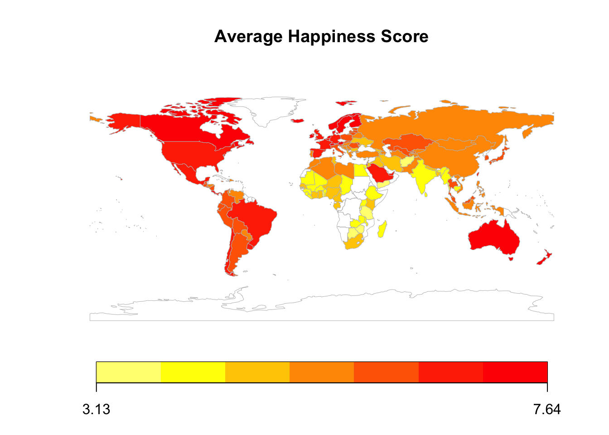
Code
# Get all country names from map datamap_countries <-unique(merged_data$Country)# Get all country names from the datadata_countries <-unique(avg_score$Country)# Find countries that are present in the data, but not matched to the map datamissing_countries <-setdiff(data_countries, map_countries)# Print out the countries not matchedprint(missing_countries)
[1] "Palestinian Territories"
Code
# Get map dataworld_map <-getMap()# Get country code and country namecountry_codes <- world_map@data$ISO3country_names <- world_map@data$NAME# Merge into one dataframecountry_synonyms <-data.frame(countryName = country_names, countryCode = country_codes)# Filter out all countries that contain "Palestinian"palestinian_rows <- country_synonyms %>%filter(str_detect(countryName, "Palestinian"))
Code
# Calculate the average happiness score per continent per yearcontinent_scores <- selected_countries_data %>%group_by(Year, Continent) %>%summarise(avg_Score =mean(Score, na.rm =TRUE))# Create line graphsggplot(continent_scores, aes(x = Year, y = avg_Score, colour = Continent)) +geom_line() +geom_point() +labs(x ="Year", y ="Average Happiness Score", title ="Happiness Score by Continent Over Time") +theme_minimal()
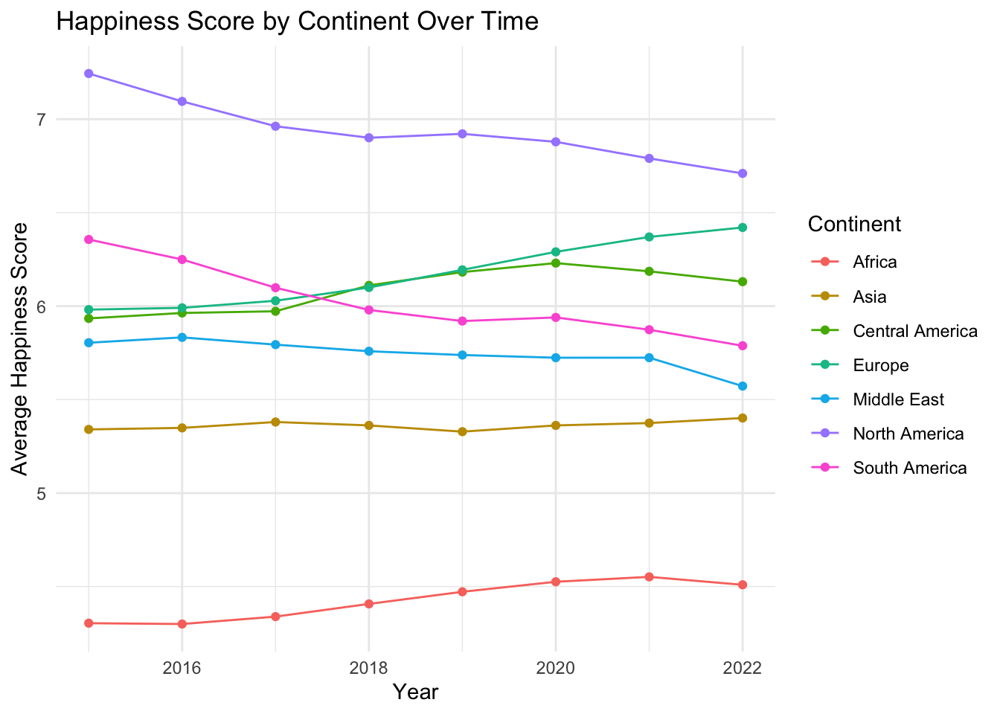
Code
# Calculate the average happiness score per year for each country development scenariodevelopment_scores <- selected_countries_data %>%group_by(Year, Developed) %>%summarise(avg_Score =mean(Score, na.rm =TRUE))# Calculate the difference between the average happiness scores of developed and developing countries for each yeardevelopment_score_diff <- development_scores %>%spread(Developed, avg_Score) %>%mutate(diff =`Developed`-`Developing`)# First, assign each graph separately to the variableplot1 <-ggplot(development_scores, aes(x = Year, y = avg_Score, colour = Developed)) +geom_line() +geom_point() +labs(x ="Year", y ="Average Happiness Score", title ="Happiness Score by Development Over Time") +theme_minimal()plot2 <- plot2 <-ggplot(development_score_diff, aes(x = Year, y = diff)) +geom_bar(stat ="identity", fill ="grey50", alpha =0.5) +geom_line(aes(group =1), colour ="blue", size =1) +# Add line graphgeom_text(aes(label =round(diff, 2)), vjust =-0.5) +labs(x ="Year", y ="Score Difference", title ="Score Difference between Developed & Developing Countries") +theme_minimal() +expand_limits(y =max(development_score_diff$diff) +1.5)plot2 <- plot2 +theme(axis.text =element_text(size =6),axis.title =element_text(size =4, face ="bold"))# Then, use the plot_grid function to put the two graphs togetherplot_grid(plot1, plot2, nrow =2)
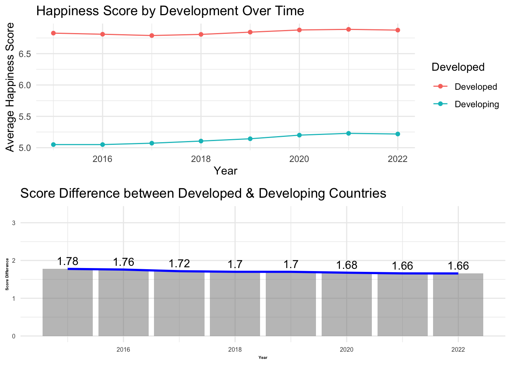
Exploring Global Happiness Disparities
With the data systematically categorized and harmonized, we explored the global disparities in happiness, taking into account geographical location, economic status, and cultural factors. The incorporation of ‘Continent’ and ‘Developed’ labels in our dataset added depth to our understanding of these disparities.
Visualizing the average happiness index for each country revealed significant differences in happiness levels across different continents and levels of economic development. Notably, the gap in happiness scores between developed and developing countries appears to be narrowing, indicating progress in improving life quality in the developing world.
These findings highlight the importance of crafting policies that consider these factors in order to enhance global well-being. Future research must continue to explore these relationships in depth, to inform more targeted and effective policy recommendations.
Q2:Influential Factors on Happiness
Quantifying Influential Factors on Happiness
Our study extended beyond just identifying trends and patterns in happiness scores. It aimed to quantify the strength and direction of relationships between several predictor variables (such as GDP per Capita, Life Expectancy, Freedom, and others) and happiness scores. This goal was achieved by building a linear regression model, which, unlike visualization, provided us with precise measures of these relationships.
This statistical modeling approach allowed us to test hypotheses regarding each predictor’s effect on happiness scores and offer predictive capabilities for future happiness scores based on new data - feats that are beyond the scope of visualization alone.
Code
# Fit a multiple linear regression modelmodel_1 <-lm(Score ~ GDP_per_Capita + Family + Life_Expectancy + Freedom + Generosity + Government_Corruption , data = selected_countries_data)# Gather the coefficients of the model into a tidy dataframetidy_model_1 <- broom::tidy(model_1)# Plot the coefficientsggplot(tidy_model_1, aes(x =reorder(term, estimate), y = estimate, fill = estimate >0)) +geom_col() +coord_flip() +labs(x ="Variables", y ="Coefficient", title ="Influence of Factors on Happiness",fill ="Positive Influence") +theme_minimal()
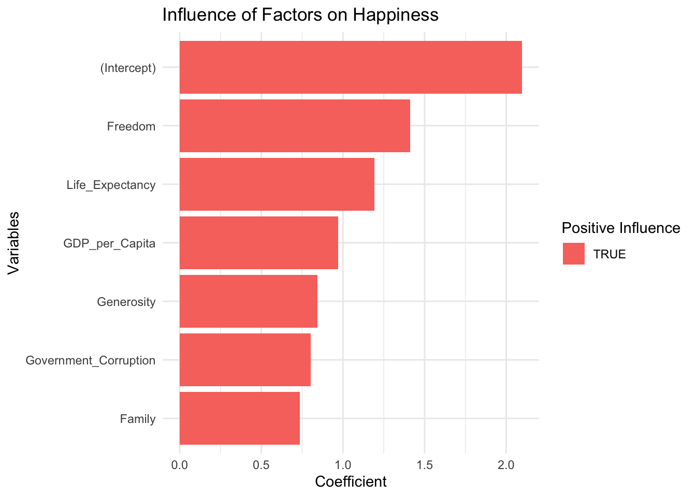
Code
df_summary_1 <-tidy(summary(model_1))df_summary_1
Key Determinants of Happiness
The factors we identified as significantly contributing to happiness were GDP per Capita, Family support, Life Expectancy, Freedom, and Generosity. In contrast, Government Corruption was found to detract from happiness. However, these elements only accounted for about 72.83% of happiness score variance, implying that there may be additional, as yet unconsidered factors that could play a role.
We also found potential interconnectedness among these factors that might further influence happiness levels, suggesting a need for further exploration. For instance, GDP per Capita might impact Life Expectancy, Family support, or Freedom, and Government Corruption might affect Freedom and Generosity.
While our findings shed light on these relationships, it’s important to remember that correlation does not imply causation. Determining causal relationships requires more in-depth research.
Multivariate Regression Analysis Insights
Our multivariate regression analysis provided key insights into the determinants of happiness. GDP per Capita, Life Expectancy, Family support, Freedom, Generosity, and Government Corruption were found to significantly influence happiness levels. However, the interaction between GDP per Capita and Life Expectancy wasn’t found to have a significant impact.
While our model explained approximately 79.65% of the variance in happiness scores, the remainder indicates the presence of other influential factors yet to be explored.
GDP_per_Capita & Life_Expectancy
Code
# Fit a multiple linear regression model with interaction termmodel_2 <-lm(Score ~ GDP_per_Capita * Life_Expectancy + Family + Freedom + Generosity + Government_Corruption + Continent + Developed, data = selected_countries_data)# Get model summary and convert it to a data framedf_summary_2 <-tidy(summary(model_2))# Print the summary data framedf_summary_2
Code
# Set the values for Life_Expectancy as the 25th, 50th and 75th percentilemodx.values <-quantile(selected_countries_data$Life_Expectancy, probs =c(0.25, 0.5, 0.75))# Create interaction plotsinteractions::interact_plot(model_2, pred = GDP_per_Capita, modx = Life_Expectancy, plot.points =TRUE, modx.values = modx.values)
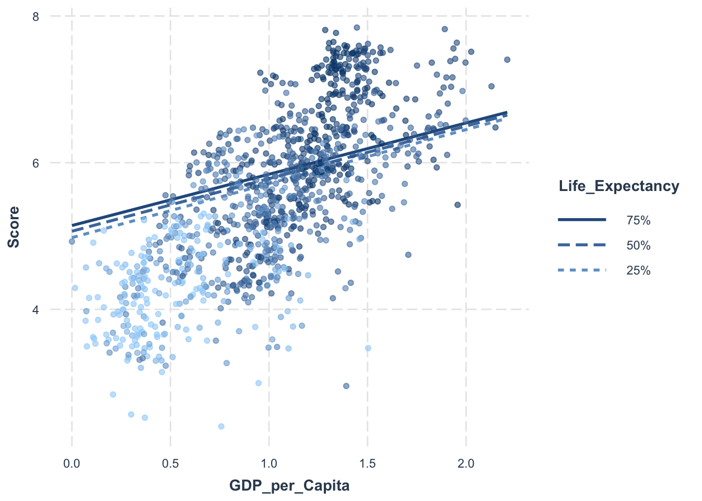
Code
# Add interaction term for GDP_per_Capita and Freedommodel_3 <-lm(Score ~ GDP_per_Capita * Freedom + Family + Life_Expectancy + Generosity + Government_Corruption + Continent + Developed, data = selected_countries_data)# Get model summary and convert it to a data framedf_summary_3 <-tidy(summary(model_3))# Print the summary data framedf_summary_3
Code
# Set the values for Freedom as the 25th, 50th and 75th percentilemodx.values <-quantile(selected_countries_data$Freedom, probs =c(0.25, 0.5, 0.75))# Create interaction plotsinteractions::interact_plot(model_3, pred = GDP_per_Capita, modx = Freedom, plot.points =TRUE, modx.values = modx.values)
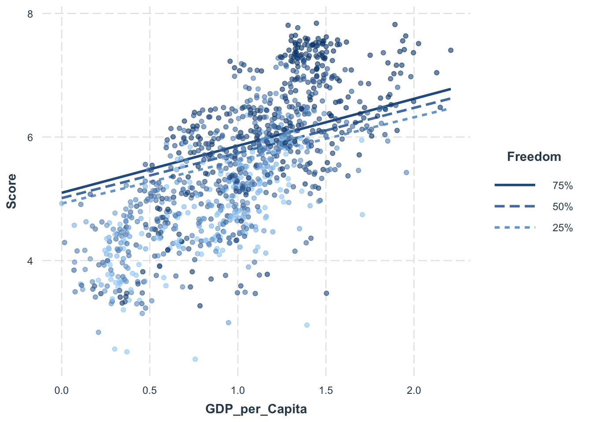
Code
# Add interaction term for Family and Life_Expectancymodel_4 <-lm(Score ~ Family * Life_Expectancy + GDP_per_Capita + Freedom + Generosity + Government_Corruption + Continent + Developed, data = selected_countries_data)# Get model summary and convert it to a data framedf_summary_4 <-tidy(summary(model_4))# Print the summary data framedf_summary_4
Code
# Set the values for Life_Expectancy as the 25th, 50th and 75th percentilemodx.values <-quantile(selected_countries_data$Life_Expectancy, probs =c(0.25, 0.5, 0.75))# Create interaction plotsinteractions::interact_plot(model_4, pred = Family, modx = Life_Expectancy, plot.points =TRUE, modx.values = modx.values)
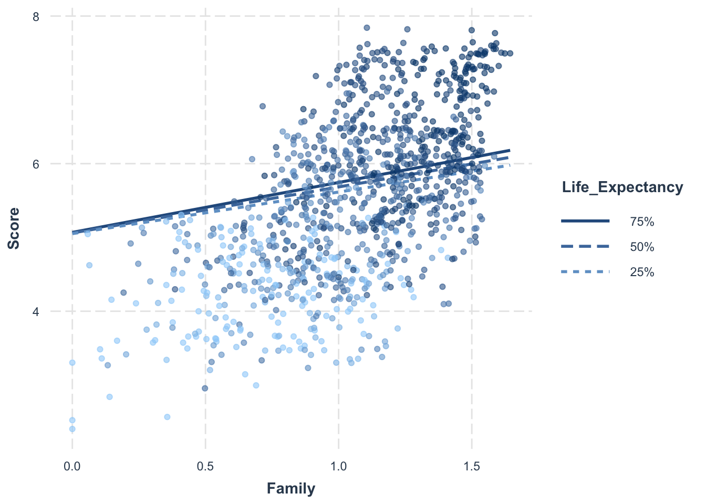
Addressing Data Gaps
During our analysis, we noticed a gap in our dataset, specifically the ‘Government_Corruption’ data for the ‘United Arab Emirates’ in 2018. To maintain the integrity of our model, we calculated the average ‘Government_Corruption’ score for this country from 2015 to 2017 and used this value as an estimate for the missing 2018 data.
Code
# Locate the rows where 'Government_Corruption' is NAna_rows <-which(is.na(selected_countries_data$Government_Corruption))# Print the rows with NA in 'Government_Corruption'selected_countries_data[na_rows, ]
Code
uae_data <- selected_countries_data[selected_countries_data$Country =="United Arab Emirates", ]uae_data
Code
# Locate the missing data rowmissing_row <- selected_countries_data$Country =="United Arab Emirates"& selected_countries_data$Year ==2018# Calculate the average Government_Corruption from 2015 to 2017average_gov_corruption <-mean(selected_countries_data$Government_Corruption[selected_countries_data$Country =="United Arab Emirates"& selected_countries_data$Year %in%2015:2017], na.rm =TRUE)# Fill the missing value with the calculated averageselected_countries_data$Government_Corruption[missing_row] <- average_gov_corruption
Code
# Check missing values in the dataany(is.na(selected_countries_data))
[1] FALSE
Unveiling Complex Relationships
Our updated model, which accounted for the combined effect of Freedom and Government Corruption, still identified GDP per Capita, Family support, Life Expectancy, and Generosity as the most impactful factors on happiness scores. Even with this added interaction, the explanatory power of our model remained unchanged, indicating that Freedom and Government Corruption might not interact significantly to affect happiness levels.
Notably, we discovered a significant relationship between a country’s GDP per Capita and its level of Generosity on its happiness score. This interaction, alongside other key predictors like Family support, Life Expectancy, Freedom, and Development Level, enhanced our understanding and prediction of happiness scores.
Code
# Add interaction term for Freedom and Government_Corruptionmodel_5 <-lm(Score ~ Freedom * Government_Corruption + GDP_per_Capita + Family + Life_Expectancy + Generosity + Continent + Developed, data = selected_countries_data)# Get model summary and convert it to a data framedf_summary_5 <-tidy(summary(model_5))# Print the summary data framedf_summary_5
Code
# Set the values for Government_Corruption as the 25th, 50th and 75th percentile, ignore missing valuesmodx.values <-quantile(selected_countries_data$Government_Corruption, probs =c(0.25, 0.5, 0.75), na.rm =TRUE)# Create interaction plotsinteractions::interact_plot(model_5, pred = Freedom, modx = Government_Corruption, plot.points =TRUE, modx.values = modx.values)
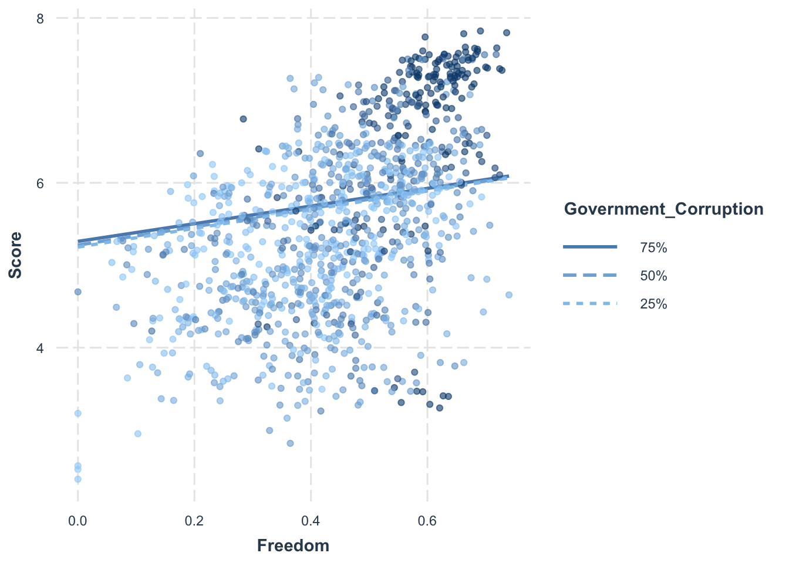
Code
# Add interaction term for Generosity and GDP_per_Capitamodel_6 <-lm(Score ~ Generosity * GDP_per_Capita + Family + Life_Expectancy + Freedom + Government_Corruption + Continent + Developed, data = selected_countries_data)# Get model summary and convert it to a data framedf_summary_6 <-tidy(summary(model_6))# Print the summary data framedf_summary_6
Code
# Set the values for GDP_per_Capita as the 25th, 50th and 75th percentilemodx.values <-quantile(selected_countries_data$GDP_per_Capita, probs =c(0.25, 0.5, 0.75))# Create interaction plotsinteractions::interact_plot(model_6, pred = Generosity, modx = GDP_per_Capita, plot.points =TRUE, modx.values = modx.values)
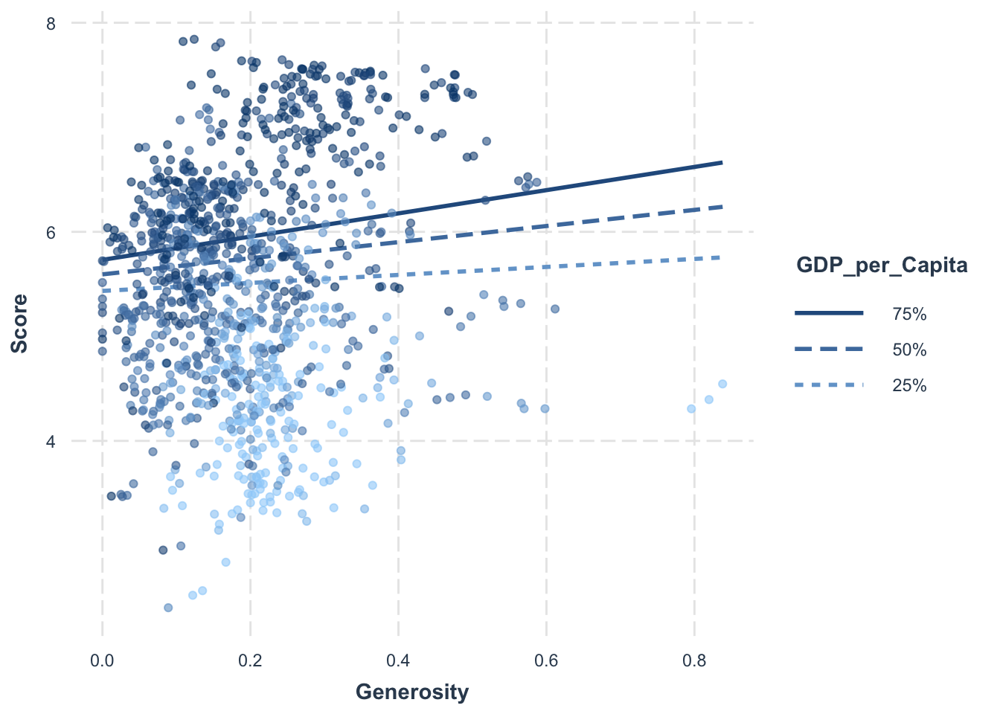
Conclusion
Our comprehensive analysis delved into an array of factors influencing happiness, from economic indicators like GDP per Capita to socio-cultural aspects such as Freedom and Generosity. We also explored the impact of Life Expectancy, Family support, Government Corruption, geographic regions, and development levels, and even considered the interactive effects of certain combinations.
We found that while some factors significantly influenced happiness scores, others did not. Importantly, the interplay between GDP per Capita and Generosity was found to be a critical determinant of happiness. Nevertheless, around 20% of the differences in happiness scores were unexplained by our model, indicating the existence of other influential factors yet to be discovered.
This study underscores the complex nature of happiness and highlights the need for continued exploration in this captivating field of research.
Q3:Temporal Evolution of Happiness and Factors
The Changing Dynamics of Happiness Over Time
Our investigation into the temporal evolution of happiness has yielded some compelling insights. As the years progress, the key drivers of happiness appear to be undergoing intriguing transformations.
Notably, the impacts of GDP per capita, family support, and personal freedom on happiness have all shown significant temporal fluctuations. Intriguingly, the influence of wealth, denoted by GDP per capita, and personal freedom on happiness seem to be on a gradual decline. Conversely, the role of family support in determining our sense of happiness appears to be gaining increased importance over time.
However, our model couldn’t wholly capture this complex evolution of happiness. While it managed to explain approximately 73.52% of the changes in happiness scores over time, there was still an average difference of 0.5613 between our predicted and actual happiness scores. This suggests the presence of additional influential factors, which we have yet to explore.
In essence, these findings reveal a dynamic picture of happiness and its determinants, emphasizing the evolving influence of different life aspects on our well-being. This invites further research to understand these unexplored elements and their role in the intricate evolution of happiness.
Code
# Time evolution of happiness scoresavg_scores_by_year <- selected_countries_data %>%group_by(Year) %>%summarise(avg_Score =mean(Score, na.rm =TRUE))ggplot(avg_scores_by_year, aes(x = Year, y = avg_Score)) +geom_line() +labs(x ="Year", y ="Average Happiness Score", title ="Average Happiness Score Over Time") +theme_minimal()
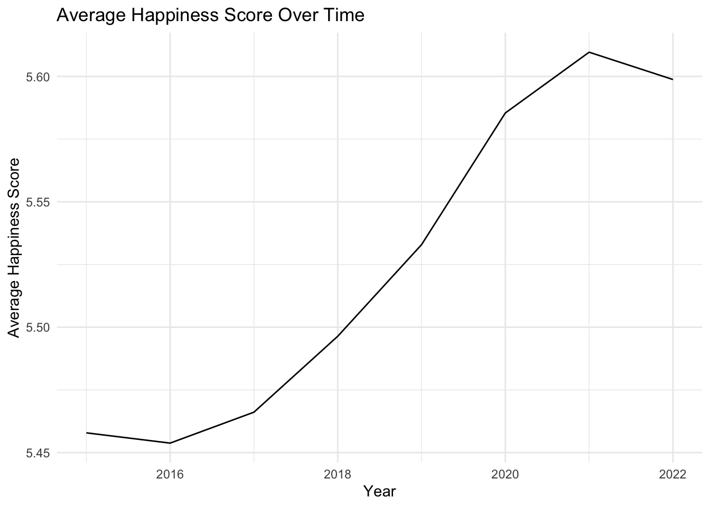
Code
# Time evolution of GDP per capitaavg_gdp_by_year <- selected_countries_data %>%group_by(Year) %>%summarise(avg_GDP_per_Capita =mean(GDP_per_Capita, na.rm =TRUE))ggplot(avg_gdp_by_year, aes(x = Year, y = avg_GDP_per_Capita)) +geom_line() +labs(x ="Year", y ="Average GDP per Capita", title ="Average GDP per Capita Over Time") +theme_minimal()
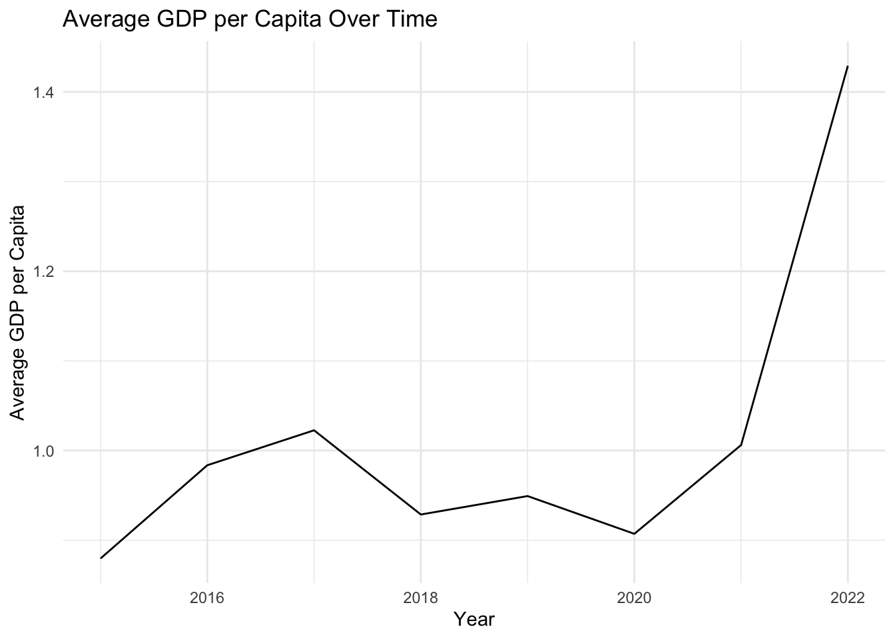
Code
# Other factors can be plotted similarly# Fitting a linear model with interaction between year and factorsfit <-lm(Score ~ GDP_per_Capita * Year + Family * Year + Life_Expectancy * Year + Freedom * Year + Generosity * Year + Government_Corruption * Year, data = selected_countries_data)fit_tidy <-tidy(summary(fit))fit_tidy
Code
# First, create a function to plot the time evolution of a given factorplot_time_evolution <-function(factor_name) { avg_by_year <- selected_countries_data %>%group_by(Year) %>%summarise(average =mean(!!sym(factor_name), na.rm =TRUE))ggplot(avg_by_year, aes(x = Year, y = average)) +geom_line() +labs(x ="Year", y =paste0("Average ", factor_name), title =paste0("Average ", factor_name, " Over Time")) +theme_minimal()}# Now, create a list of factors that we want to plotfactors_to_plot <-c("Family", "Life_Expectancy", "Freedom", "Generosity", "Government_Corruption")# Use purrr to apply the plotting function to each factorpurrr::map(factors_to_plot, plot_time_evolution)
[[1]]
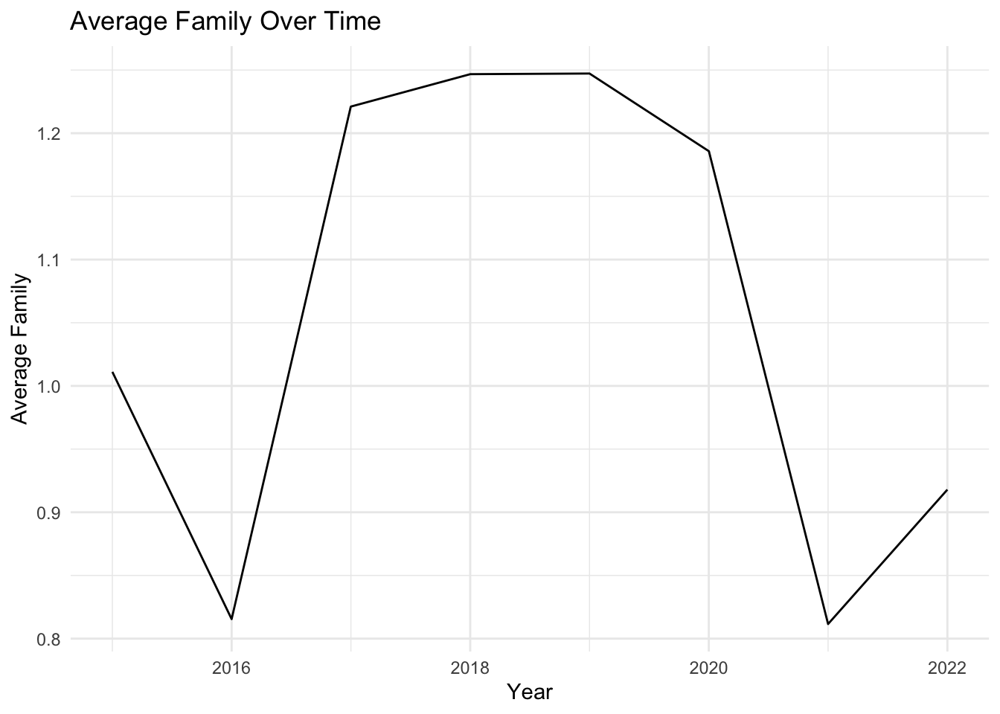
[[2]]
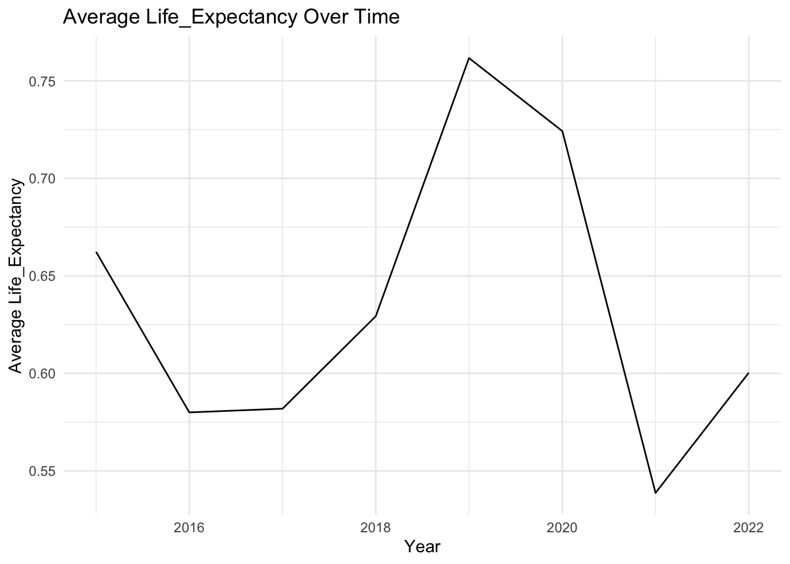
[[3]]
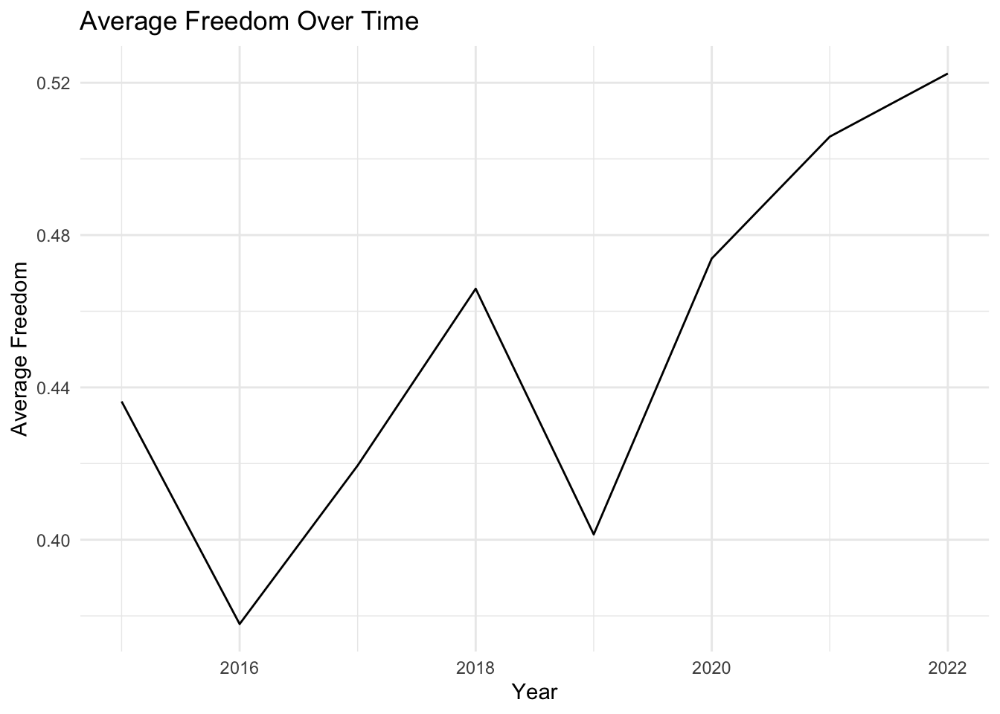
[[4]]
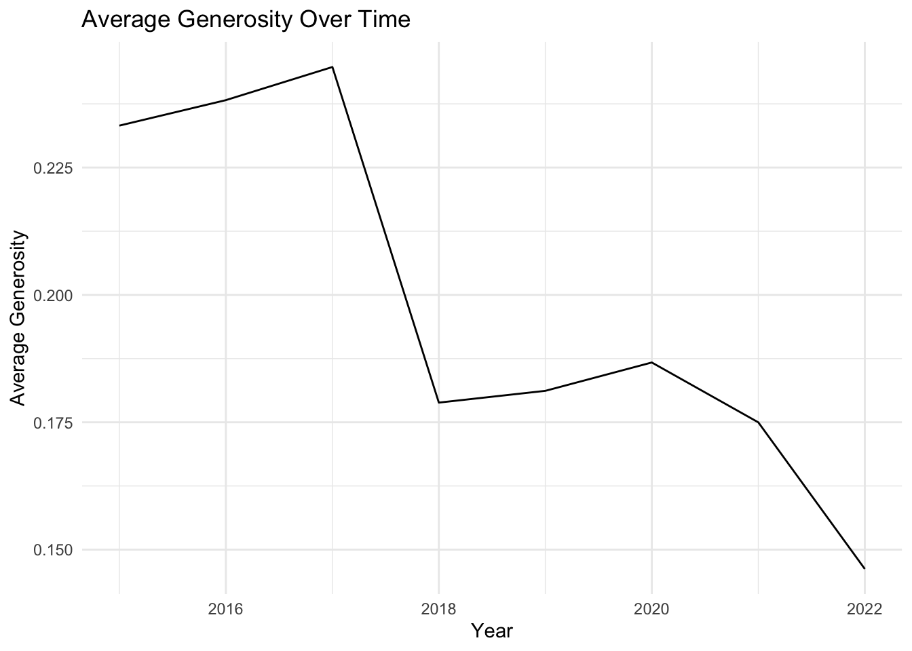
[[5]]
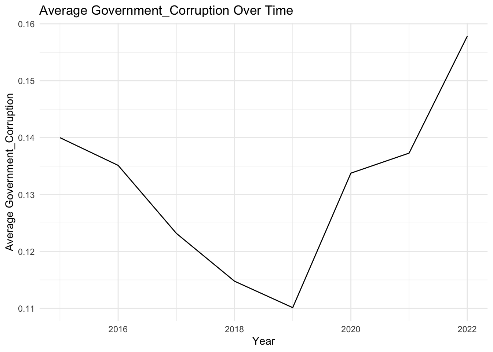
Q4:Impact of a Specific Factor on Happiness
Exploring the Influence of Specific Factors on Happiness
Our deep dive into the determinants of happiness has yielded some intriguing findings. In this analysis, we concentrated on variables such as per capita GDP, family support, life expectancy, freedom, generosity, and government corruption, unraveling their unique relationships with happiness.
For instance, wealth - denoted as GDP per capita - demonstrated a robust positive correlation with happiness. This relationship suggests that an increase in a nation’s wealth can lead to a corresponding elevation in the happiness of its citizens. Specifically, for each unit increase in GDP per capita, we observed a substantial 1.92 unit surge in happiness scores.
Yet, this consistent pattern was not universal across all variables. Freedom, generosity, and government corruption presented high variability in their impacts on happiness, implying that these relationships might be under the influence of other, more intricate factors. For example, the effect of government corruption on happiness could be contingent on a nation’s level of economic development.
These insights emphasize the need to consider a multifaceted array of influences that contribute to our well-being. Further exploration may involve refining our current models or integrating new variables to account for the variability observed. Ultimately, the goal is to foster a more nuanced understanding of the key elements underpinning our sense of happiness.
Code
# Fit a linear model and perform the Breusch-Pagan testselected_countries_data %>%lm(Score ~ GDP_per_Capita, data = .) %>% {list(tidy_summary =summary(.) %>%tidy(),bp_test =bptest(.) %>%tidy())} -> results# Print the tidy summary of the modelresults$tidy_summary
Code
# Print the tidy Breusch-Pagan testresults$bp_test
Code
# Plot the result with enhanced visualizationselected_countries_data %>%ggplot(aes(x = GDP_per_Capita, y = Score)) +geom_point(alpha =0.5, size =2, color ="blue") +# change point attributesgeom_smooth(method = lm, se =FALSE, color ="red", linetype ="dashed", size =1.5) +# change line attributeslabs(x ="GDP per Capita", y ="Happiness Score", title ="Impact of GDP per Capita on Happiness Score") +theme_minimal() +# change themetheme(plot.title =element_text(face ="bold", size =10, hjust =0.5), # change title attributesaxis.title =element_text(face ="bold", size =8)) # change axis labels attributes
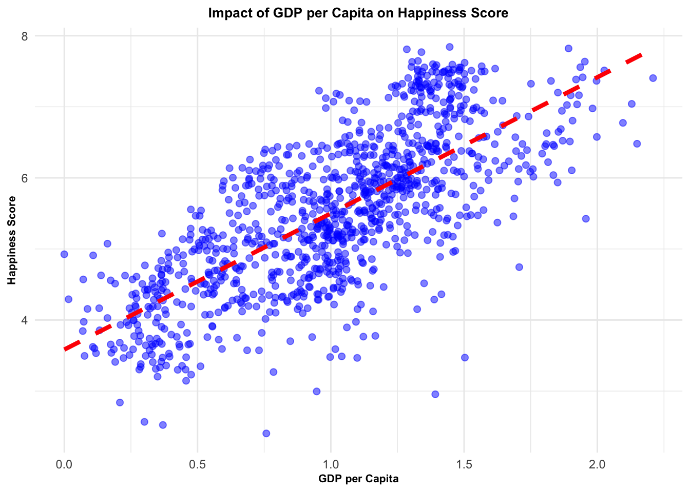
Code
# Create a list of factorsfactors <-c("Family", "Life_Expectancy", "Freedom", "Generosity", "Government_Corruption")# Create a function to perform the same analysis for each factoranalysis_func <-function(factor) {# Fit a linear model and perform the Breusch-Pagan testlm(as.formula(paste("Score ~", factor)), data = selected_countries_data) %>% {list(tidy_model =summary(.) %>%tidy(),bp_test =bptest(.) %>%tidy(),model_plot = selected_countries_data %>%ggplot(aes_string(x = factor, y ="Score")) +geom_point(alpha =0.5, size =2, color ="blue") +# change point attributesgeom_smooth(method = lm, se =FALSE, color ="red", linetype ="dashed", size =1.5) +# change line attributeslabs(x = factor, y ="Happiness Score", title =paste("Impact of", factor, "on Happiness Score")) +theme_minimal() +# change themetheme(plot.title =element_text(face ="bold", size =10, hjust =0.5), # change title attributesaxis.title =element_text(face ="bold", size =8)))} # change axis labels attributes}# Apply the function to each factor using purrr's map functionresults_1 <- purrr::map(factors, analysis_func)# Print the resultsresults_1
The choice of China and the United States as case studies stems from their prominent global roles, contrasting cultural, social, and political systems, and pragmatic considerations related to data analysis. The original dataset encompasses a vast amount of data spanning numerous countries (135 countries with 8 years of complete data). Consequently, it’s beyond the scope of this analysis to delve into every country individually. As the two largest economies worldwide, China and the U.S. wield significant global influence. Their paths to their current statuses have been distinctly different, as are their societal values. Examining the determinants of happiness in these two nations can provide valuable insights into how various factors contribute to societal well-being within diverse contexts. Additionally, comparing these two countries may shed light on how different economic and political systems can shape citizen happiness.
In our investigation into the determinants of happiness, we considered factors such as GDP per capita, family support, life expectancy, freedom, generosity, government corruption, as well as their interactions with time and location, specifically within the context of China and the United States. Interestingly, none of these factors emerged as significant predictors of happiness scores using commonly accepted thresholds.
Despite the model accounting for nearly all the variance in happiness (R-squared value of 0.9993), the high residual standard error coupled with low degrees of freedom suggests potential overfitting. Essentially, our model may be too precisely fitted to this particular dataset, thereby restricting its applicability to other contexts or future data.
It’s vital to remember that a high R-squared value alone doesn’t assure a robust model. Furthermore, given our study’s observational nature, we can’t establish with certainty that the factors we studied cause changes in happiness.
Our investigation emphasizes the complexity inherent in predicting happiness and underscores the necessity for further nuanced analysis to fully understand the interplay of these determinants.
Code
# Select only China and USA from the datachina_usa_data <- selected_countries_data %>%filter(Country %in%c("China", "United States"))# Time evolution of happiness scores for China and USAavg_scores_by_year <- china_usa_data %>%group_by(Year, Country) %>%summarise(avg_Score =mean(Score, na.rm =TRUE))# Time evolution of ranks for China and USAavg_rank_by_year <- china_usa_data %>%group_by(Year, Country) %>%summarise(avg_Rank =mean(Rank, na.rm =TRUE))ggplot(avg_rank_by_year, aes(x = Year, y = avg_Rank, color = Country)) +geom_line() +labs(x ="Year", y ="Average Rank", title ="Average Rank Over Time in China and USA") +theme_minimal()
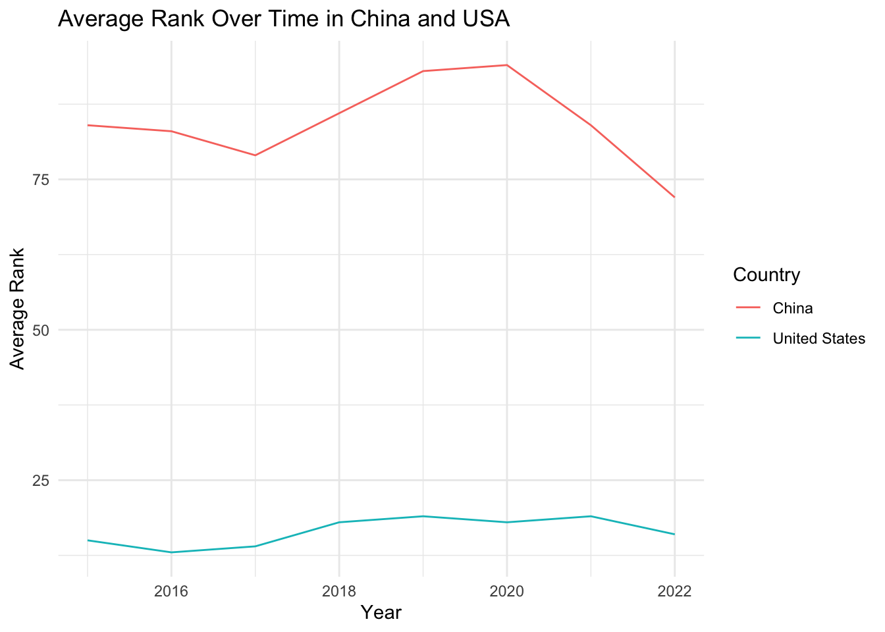
Code
# Define a list of variables to be plottedvariables <-c("Score", "GDP_per_Capita", "Family", "Life_Expectancy", "Freedom", "Generosity", "Government_Corruption")# Define a function to plot the evolution of each variableplot_variable_evolution <-function(variable) { avg_variable_by_year <- china_usa_data %>%group_by(Year, Country) %>%summarise(avg_variable =mean(.data[[variable]], na.rm =TRUE))ggplot(avg_variable_by_year, aes(x = Year, y = avg_variable, color = Country)) +geom_line() +labs(x ="Year", y =paste("Average", variable), title =paste("Average", variable, "Over Time in China and USA")) +theme_minimal()}# Use purrr's map function to apply the function to each variableplots <- purrr::map(variables, plot_variable_evolution)# Print all plotsplots
[[1]]
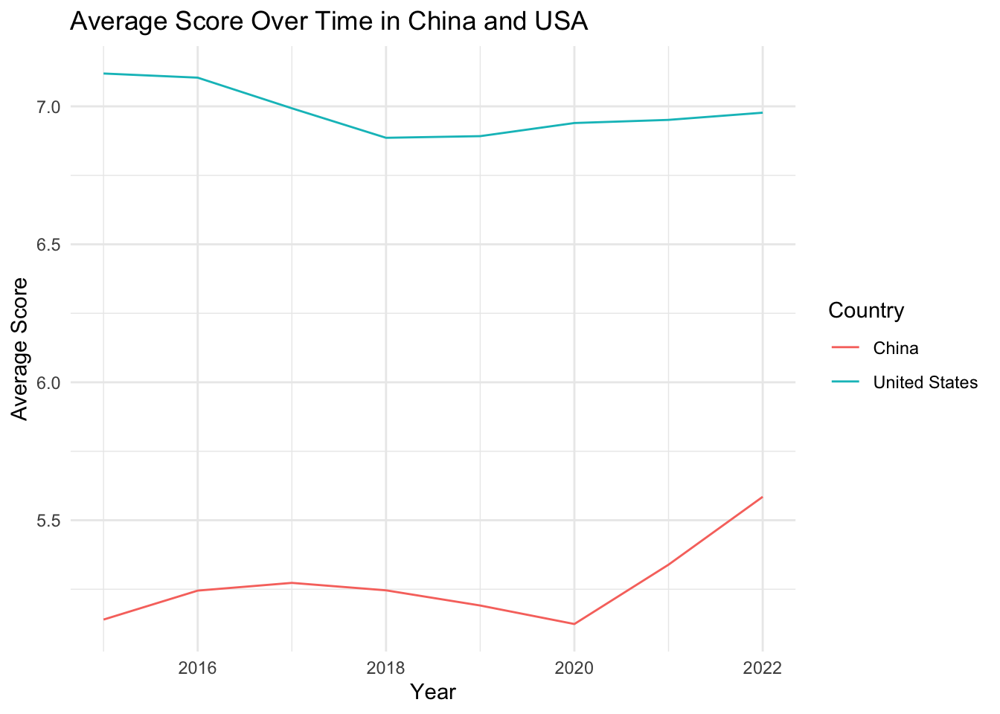
[[2]]
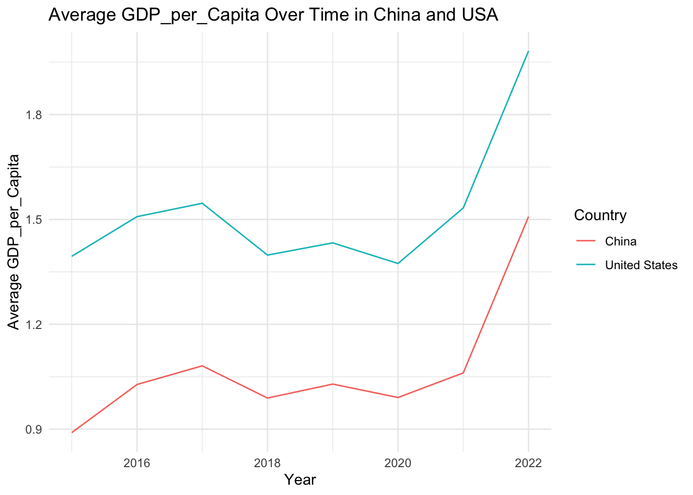
[[3]]
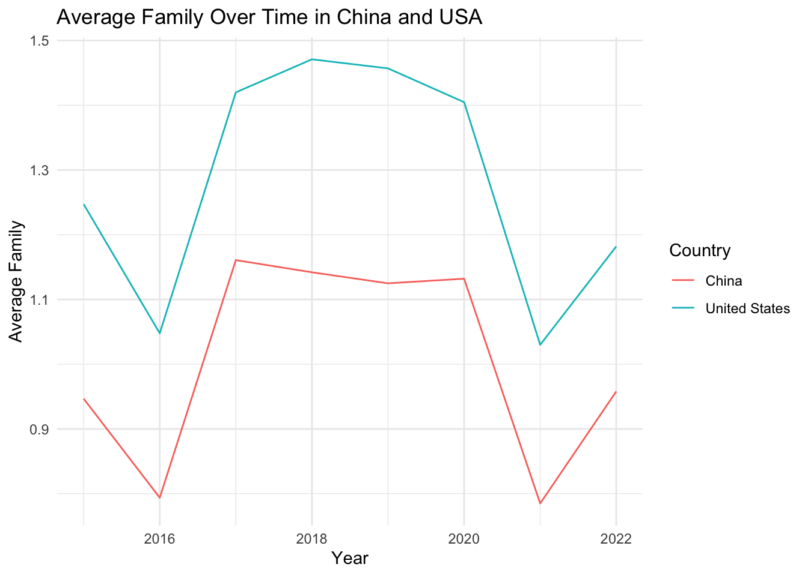
[[4]]
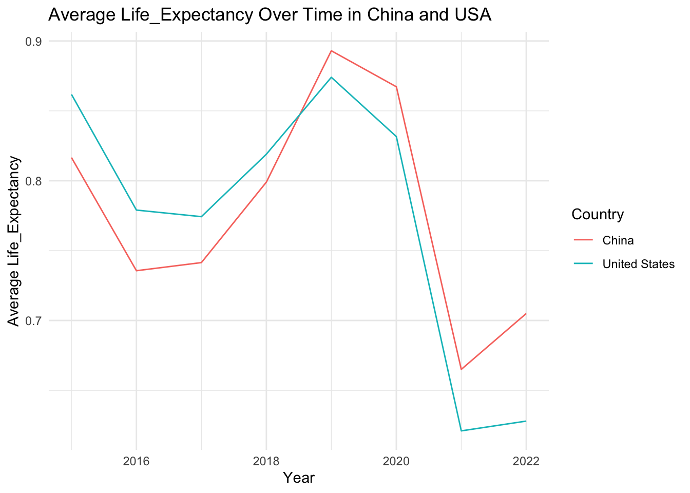
[[5]]
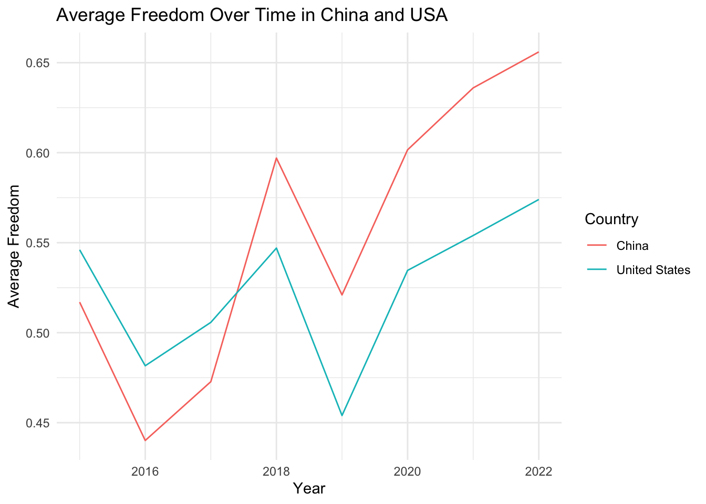
[[6]]
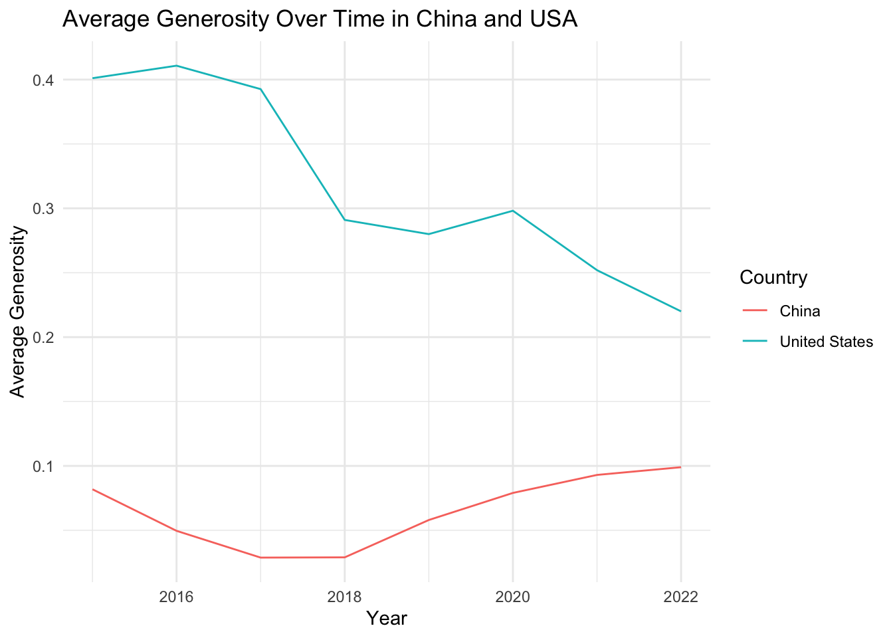
[[7]]
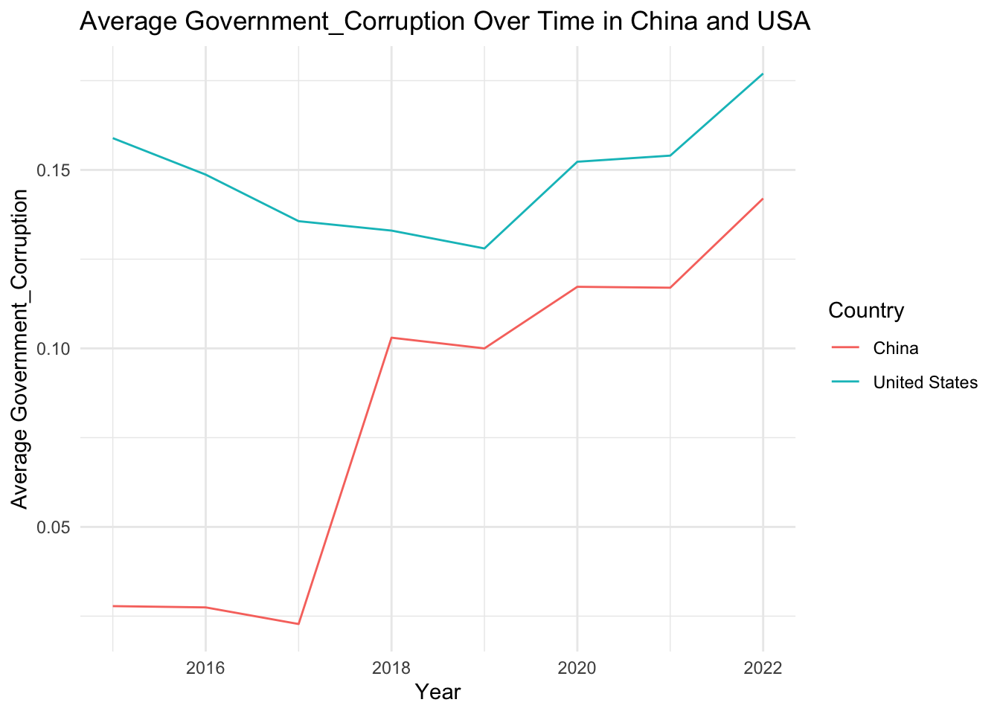
Code
# Fitting a linear model with interaction between year and factors for China and USAfit_1 <-lm(Score ~ GDP_per_Capita * Year + Family * Year + Life_Expectancy * Year + Freedom * Year + Generosity * Year + Government_Corruption * Year + Country, data = china_usa_data)fit_tidy_1 <-tidy(summary(fit_1))fit_tidy_1
Critical Reflection
Throughout this project, I extensively utilized R and its associated packages for data processing, visualization, and modeling. While R is indeed a powerful and flexible tool, its application was not without challenges and limitations.
One of the notable hurdles in the data visualization process was overplotting. In scenarios where data points were densely clustered for specific variables, it was challenging to discern clear patterns within the graphs. Potential countermeasures, such as employing more complex visualizations like 2D kernel density plots or introducing jittering to minimize overlap, were not explored within the scope of this project, and they remain avenues for future enhancement.
Further on data visualization, the geographical heatmaps constructed to illustrate happiness indices across various countries, although insightful, were found to be somewhat limited in their interactive capabilities. Users are unable to click or hover over particular regions on the map for additional information due to their static nature. Future improvements could involve integrating such interactive features to enhance user engagement and information dissemination.
As I delved into data analysis, the choice to deploy linear models was a conscious decision given their ability to reveal intricate relationships between variables. The influence and direction of independent variables on the dependent variable could be intuitively comprehended through the sign and magnitude of the coefficients. Moreover, linear models allowed for some degree of control over confounding variables, a crucial aspect when exploring a multifaceted concept like happiness.
Despite their merits, the limitations of linear models must be acknowledged. These models assume a linear relationship between independent and dependent variables, which may not always align with real-life scenarios, where relationships could be nonlinear. Additionally, the presuppositions of independent and homoscedastic error terms may not always hold.
To circumvent these challenges, we could consider more complex models such as polynomial regression models or models with interaction effects. These are especially pertinent if we suspect the relationship between happiness and other factors to be nonlinear or influenced by other variables. However, such models are computationally more demanding, complex, and may pose interpretability challenges. Thus, the model selection process invariably involves a trade-off between complexity, interpretability, and computational efficiency.
Another pitfall of modeling approaches that emerged from this study is the potential for overfitting. Overfit models can be overly precise, limiting their applicability to other contexts or future data. Care must be exercised when employing models, remaining cognizant of their underlying assumptions and potential limitations.
In conclusion, this project, despite presenting challenges, offered invaluable lessons. The encountered obstacles illuminated the complexities inherent in data analysis and underscored the importance of thoughtful model selection. These experiences will undoubtedly enrich my future research pursuits, stimulating exploration of additional analytical tools and methodologies, all while developing a more nuanced understanding of social science phenomena.
Wickham, H. (2019). Advanced R, Second Edition. CRC Press.
Wickham, H., & Grolemund, G. (2017). R for data science : import, tidy, transform, visualize, and model data. O’reilly.
Wickham, H., Sievert, C., & Springer. (2016). Ggplot2 : Elegant Graphics For Data Analysis. Cham, Schweiz] Springer.
Source Code
---title: "Final_Project:World Happiness Report"author: "Zhongyue Lin"description: "Final Project_World Happiness Reprot"date: "7/12/2023"format: html: df-print: paged toc: true code-fold: true code-copy: true code-tools: truecategories: - Final_Project---```{r}#| label: setup#| warning: false#| message: false#| include: falselibrary(tidyverse)library(DT)library(rworldmap)library(cowplot)library(broom)library(interactions)library(lmtest)knitr::opts_chunk$set(echo =TRUE, warning=FALSE, message=FALSE)```## Introduction### BackgroudHappiness, a subjective experience characterized by a state of well-being, satisfaction, and the prevalence of positive emotions over negative ones, is a complex construct to measure. Recognizing its multidimensional nature, the World Happiness Report employs an interdisciplinary approach to gauge happiness across various countries. The dataset for this report, obtained from Kaggle's platform (<https://www.kaggle.com/datasets/mathurinache/world-happiness-report>), presents a unique opportunity to delve into the intricacies of happiness and its driving factors.The World Happiness Report, an annual survey, assesses happiness levels in 153 countries worldwide, relying on data from the Gallup World Poll. The methodology involves asking respondents to rank their current life on a scale of 0 to 10, where 10 signifies the best imaginable life, and 0 represents the worst possible existence. The country's average responses constitute its happiness score, leading to a global happiness ranking. The dataset not only includes these scores but also accounts for various factors like GDP per capita, healthy life expectancy, social support, freedom to make life choices, generosity, and perceptions of corruption, contributing to the overall understanding of happiness dynamics.### Data OverviewThe dataset consists of eight CSV files spanning from 2015 to 2022, each containing happiness scores and their explanatory factors. However, the variable names differ across years, and some datasets after 2017 feature additional statistical data. To streamline the analysis, the variable names have been standardized, and extra statistical data have been appropriately processed.## Research questionsThe dataset from the World Happiness Report paves the way for a myriad of research questions:1. **Influential Factors on Happiness:** This aspect delves into the significant drivers of national happiness, including economic, social factors, and the role of corruption perception. To dissect these relationships, tools such as correlation and regression analyses will be deployed.2. **Happiness Differences Among Countries:** This dimension investigates the disparities in happiness across countries, identifying potential patterns linked to geographic, economic, or cultural variations. Comparative analyses can elucidate these patterns.3. **Temporal Evolution of Happiness and Factors:** This facet focuses on how happiness and its influencing factors have evolved over time. Time series analysis can be instrumental in identifying such trends.4. **Impact of a Specific Factor on Happiness:** This area zeroes in on the effects of individual factors, such as GDP per capita or perceived corruption, on happiness. This focus will help guide effective policy initiatives through a detailed factor analysis.By thoroughly exploring these questions, the dataset will yield valuable insights into the multifaceted dynamics of happiness, thereby providing actionable guidance for policy decisions aimed at enhancing national well-being.Data### Data ReadingIn our research process, we collected data from the Happiness Index spanning eight years, from 2015 to 2022. We meticulously loaded each year's data into our system, assigning a distinct identifier to ensure clarity and ease of access. To preserve the chronology, a 'year' column was added to each dataset. A preliminary examination of the initial entries from each year was performed, providing us an overview of the data and preparing us for subsequent analysis stages.```{r}# Define the years you want to read inyears <-2015:2022# Loop over the yearsfor (year in years) {# Define the path to the csv file file_path <-paste0("_data/Happiness_Zhongyue_Lin/", year, ".csv")# Read the csv file df <- readr::read_csv(file_path)# Add the year to the data frame df <- dplyr::mutate(df, Year = year)# Define the variable name var_name <-paste0("Happy_", year)# Assign the data frame to the variable name in the global environmentassign(var_name, df, envir = .GlobalEnv)}```### Data StandardizationAfter collecting the data, the next critical step was to standardize the eight years of Global Happiness datasets. The data was sorted based on the 'Ladder score', a measure of happiness, to maintain uniformity. Key column names were harmonized across all datasets, and certain columns were converted to a numeric format to facilitate analysis. We addressed potential inconsistencies by adjusting column names and scales, ensuring data quality and laying the groundwork for accurate and consistent analysis.`Add "Rank"````{r}# Define a function to calculate rankcalculate_rank <-function(df, score_column) { df <- df %>%mutate(Rank =rank(desc(!!rlang::sym(score_column))))return(df)}# Calculate rank for Happy_2020 and Happy_2021Happy_2020 <-calculate_rank(Happy_2020, "Ladder score")Happy_2021 <-calculate_rank(Happy_2021, "Ladder score")````Uniform variable name````{r}# Create a function to rename rank columnrename_rank_column <-function(df, old_name) { df %>%rename(Rank = old_name)}# Apply this function to all dataframesHappy_2015 <-rename_rank_column(Happy_2015, 'Happiness Rank')Happy_2016 <-rename_rank_column(Happy_2016, 'Happiness Rank')Happy_2017 <-rename_rank_column(Happy_2017, 'Happiness.Rank')Happy_2018 <-rename_rank_column(Happy_2018, 'Overall rank')Happy_2019 <-rename_rank_column(Happy_2019, 'Overall rank')Happy_2020 <-rename_rank_column(Happy_2020, 'Rank')Happy_2021 <-rename_rank_column(Happy_2021, 'Rank')Happy_2022 <-rename_rank_column(Happy_2022, 'RANK')# Create a function to rename country columnrename_country_column <-function(df, old_name) { df %>%rename(Country = old_name)}# Apply this function to all dataframesHappy_2015 <-rename_country_column(Happy_2015, 'Country')Happy_2016 <-rename_country_column(Happy_2016, 'Country')Happy_2017 <-rename_country_column(Happy_2017, 'Country')Happy_2018 <-rename_country_column(Happy_2018, 'Country or region')Happy_2019 <-rename_country_column(Happy_2019, 'Country or region')Happy_2020 <-rename_country_column(Happy_2020, 'Country name')Happy_2021 <-rename_country_column(Happy_2021, 'Country name')Happy_2022 <-rename_country_column(Happy_2022, 'Country')# Create a function to rename score columnrename_score_column <-function(df, old_name) { df %>%rename(Score = old_name)}# Apply this function to all dataframesHappy_2015 <-rename_score_column(Happy_2015, 'Happiness Score')Happy_2016 <-rename_score_column(Happy_2016, 'Happiness Score')Happy_2017 <-rename_score_column(Happy_2017, 'Happiness.Score')Happy_2020 <-rename_score_column(Happy_2020, 'Ladder score')Happy_2021 <-rename_score_column(Happy_2021, 'Ladder score')Happy_2022 <-rename_score_column(Happy_2022, 'Happiness score')``````{r}Happy_2022 <- Happy_2022 %>%mutate(across(c('Dystopia (1.83) + residual', 'Explained by: GDP per capita','Explained by: Healthy life expectancy','Explained by: Freedom to make life choices','Explained by: Social support','Explained by: Generosity','Explained by: Perceptions of corruption'), ~as.numeric(gsub(",", ".", .))),across(-Country, as.numeric))Happy_2022 <- Happy_2022 %>%mutate(across(c("Score", "Whisker-high", "Whisker-low"), ~ . /1000))``````{r,warning=FALSE}# Create a function to rename multiple columnsrename_columns <-function(df, old_names, new_names) { df %>%rename_at(vars(old_names), ~ new_names)}# Define new namesnew_names <-c("GDP_per_Capita", "Family", "Life_Expectancy", "Freedom", "Generosity", "Government_Corruption", "Dystopia_Residual")# Apply this function to all dataframesHappy_2015 <-rename_columns(Happy_2015, c("Economy (GDP per Capita)", "Family", "Health (Life Expectancy)", "Freedom", "Generosity", "Trust (Government Corruption)", "Dystopia Residual"), new_names)Happy_2016 <-rename_columns(Happy_2016, c("Economy (GDP per Capita)", "Family", "Health (Life Expectancy)", "Freedom", "Generosity", "Trust (Government Corruption)", "Dystopia Residual"), new_names)Happy_2017 <-rename_columns(Happy_2017, c("Economy..GDP.per.Capita.", "Family", "Health..Life.Expectancy.", "Freedom", "Generosity", "Trust..Government.Corruption.", "Dystopia.Residual"), new_names)Happy_2018 <-rename_columns(Happy_2018, c("GDP per capita", "Social support", "Healthy life expectancy", "Freedom to make life choices", "Generosity", "Perceptions of corruption"), new_names[-length(new_names)])Happy_2019 <-rename_columns(Happy_2019, c("GDP per capita", "Social support", "Healthy life expectancy", "Freedom to make life choices", "Generosity", "Perceptions of corruption"), new_names[-length(new_names)])``````{r}old_names_2020_to_2021 <-c("Explained by: Log GDP per capita", "Explained by: Social support", "Explained by: Healthy life expectancy", "Explained by: Freedom to make life choices", "Explained by: Generosity", "Explained by: Perceptions of corruption", "Dystopia + residual")old_names_2022 <-c("Explained by: GDP per capita", "Explained by: Social support", "Explained by: Healthy life expectancy", "Explained by: Freedom to make life choices", "Explained by: Generosity", "Explained by: Perceptions of corruption", "Dystopia (1.83) + residual")# Define a function to drop a column if it existsdrop_column_if_exists <-function(df, column_name) {if (column_name %in%colnames(df)) { df <- df %>%select(-column_name) }return(df)}# Drop original 'Generosity' column if it exists in Happy_2020 and Happy_2021 datasetsHappy_2020 <-drop_column_if_exists(Happy_2020, 'Generosity')Happy_2021 <-drop_column_if_exists(Happy_2021, 'Generosity')# Then proceed with the renaming processHappy_2020 <-rename_columns(Happy_2020, old_names_2020_to_2021, new_names)Happy_2021 <-rename_columns(Happy_2021, old_names_2020_to_2021, new_names)Happy_2022 <-rename_columns(Happy_2022, old_names_2022, new_names)```### Data IntegrationThe final preparatory step was to merge the individual datasets from 2015 to 2022 into a single, comprehensive dataset. During this integration, we retained only the necessary columns, standardized country names, and converted some columns to more suitable data types. Countries not consistently present across all years were filtered out to maintain data consistency. We also generated statistical summaries of the numeric columns for each year to give a snapshot of the general tendencies in the data. The result is a systematically organized, paginated table that is primed for deeper and more thorough analysis.```{r,warning=FALSE}# Create a list of data boxesdfs <-list(Happy_2015 = Happy_2015, Happy_2016 = Happy_2016, Happy_2017 = Happy_2017, Happy_2018 = Happy_2018, Happy_2019 = Happy_2019, Happy_2020 = Happy_2020,Happy_2021 = Happy_2021, Happy_2022 = Happy_2022)# Apply the function to each element in the listdfs <-map(dfs, ~ .x %>%mutate(Government_Corruption =as.numeric(Government_Corruption)))# Extract each data frame and assign it back to the original variablelist2env(dfs, envir = .GlobalEnv)``````{r}# Specify the columns you needneeded_columns <-c("Country", "Year", "Score", "Rank", "GDP_per_Capita", "Family", "Life_Expectancy", "Freedom", "Generosity", "Government_Corruption" )# Create a function to select specific columnsselect_columns <-function(df, columns) { df %>%select(all_of(columns))}# Create a list of datasetsdfs <-list(Happy_2015 = Happy_2015, Happy_2016 = Happy_2016, Happy_2017 = Happy_2017, Happy_2018 = Happy_2018, Happy_2019 = Happy_2019, Happy_2020 = Happy_2020,Happy_2021 = Happy_2021, Happy_2022 = Happy_2022)# Apply the function to each dataset in the listselected_dfs <-map(dfs, ~select_columns(.x, needed_columns))# Combine all the selected data frames togetherall_years_selected <-bind_rows(selected_dfs) %>%mutate(Rank =as.integer(Rank))# Remove * from Country namesall_years_selected$Country <-gsub("\\*", "", all_years_selected$Country)# Replace 'Trinidad & Tobago' with 'Trinidad and Tobago'all_years_selected$Country <-gsub("Trinidad & Tobago", "Trinidad and Tobago", all_years_selected$Country)# Replace 'Taiwan Province of China' with 'Taiwan'all_years_selected$Country <-gsub("Taiwan Province of China", "Taiwan", all_years_selected$Country)# Replace 'Hong Kong S.A.R. of China' and 'Hong Kong S.A.R., China' with 'Hong Kong'all_years_selected$Country <-gsub("Hong Kong S.A.R. of China", "Hong Kong", all_years_selected$Country)all_years_selected$Country <-gsub("Hong Kong S.A.R., China", "Hong Kong", all_years_selected$Country)# Print the first few rows of the new dataframeall_years_selected``````{r}#Count the number of countries per yearcountry_counts <- all_years_selected %>%group_by(Year) %>%summarise(n_countries =n_distinct(Country))country_counts``````{r}# Function to compute frequency for categorical variablescompute_frequency <-function(data, var_name) { var <-enquo(var_name) # turn the variable name into a symbol var_str <- rlang::as_name(var) # convert the quosure to a string freq <-table(data[[var_str]])return(freq)}# Convert the table to a data framecountry_freq_df <-as.data.frame(table(all_years_selected$Country))# Name the columnsnames(country_freq_df) <-c("Country", "Frequency")# Filter the datacountries_with_frequency_8 <- country_freq_df %>%filter(Frequency ==8)# View the resultcountries_with_frequency_8# Filter the original datasetselected_countries_data <- all_years_selected %>%filter(Country %in% countries_with_frequency_8$Country)``````{r}country_counts <- selected_countries_data %>%group_by(Year) %>%summarise(n_countries =n_distinct(Country))country_counts``````{r}selected_countries_data %>%group_by(Year) %>%summarise(across(where(is.numeric) &!Rank, list(min=min, median=median, mean=mean, max=max), .names ="{.col}_{.fn}")) %>% DT::datatable(options =list(pageLength =5, # Set number of rows per pagedom ='tp'# Show only table (t) and pagination control (p) ) )```## Visualizations & Analysis### Q1: How does happiness differ by country?#### Categorical Data IntegrationIn this part of the process, we enhanced our dataset by adding two new labels - 'Continent' and 'Developed'. 'Continent' helped us categorize countries based on geographical location, while 'Developed' served to distinguish countries according to their economic development stage. With these new classifications, we were able to conduct more nuanced comparisons of happiness levels, not just across countries but also across different geographical regions and stages of development.```{r,results = 'hide'}# Print the unique countries in selected_countries_dataunique_countries <-unique(selected_countries_data$Country)``````{r}# Define the continent based on the countryselected_countries_data <- selected_countries_data %>%mutate(Continent =case_when( Country %in%c("Canada", "United States", "Mexico") ~"North America", Country %in%c("Costa Rica", "Panama", "Guatemala", "El Salvador", "Honduras", "Nicaragua", "Dominican Republic","Jamaica") ~"Central America", Country %in%c("Brazil", "Venezuela", "Chile", "Argentina", "Uruguay", "Colombia", "Ecuador", "Bolivia", "Paraguay", "Peru") ~"South America", Country %in%c("Switzerland", "Iceland", "Denmark", "Norway", "Finland", "Netherlands", "Sweden", "Austria", "Luxembourg", "Ireland", "Belgium", "United Kingdom", "Germany", "France", "Spain", "Malta", "Italy", "Moldova", "Slovakia", "Slovenia", "Lithuania", "Belarus", "Poland", "Croatia", "Russia", "Cyprus", "Kosovo", "Estonia", "Latvia", "Albania", "Bosnia and Herzegovina", "Greece", "Hungary", "Portugal", "Romania", "Serbia", "Bulgaria", "Ukraine", "Armenia", "Georgia","Montenegro") ~"Europe", Country %in%c("Israel", "United Arab Emirates", "Saudi Arabia", "Kuwait", "Bahrain", "Jordan", "Lebanon", "Iran", "Iraq") ~"Middle East", Country %in%c("New Zealand", "Australia", "Singapore", "Japan", "South Korea", "Taiwan", "Uzbekistan", "Malaysia", "Thailand", "Vietnam", "Indonesia", "Hong Kong", "China", "Kazakhstan", "Pakistan", "Turkmenistan", "Azerbaijan", "Philippines", "India", "Mongolia", "Bangladesh", "Nepal", "Myanmar", "Cambodia", "Sri Lanka","Kyrgyzstan","Tajikistan","Yemen","Afghanistan","Turkey") ~"Asia", Country %in%c("Mauritius", "Libya", "Algeria", "Nigeria", "Morocco", "Zimbabwe", "Ghana", "Zambia", "Kenya", "Egypt", "South Africa", "Ethiopia", "Sierra Leone", "Cameroon", "Malawi", "Gabon", "Senegal", "Niger", "Uganda", "Liberia", "Tanzania", "Madagascar", "Guinea", "Ivory Coast", "Burkina Faso", "Benin", "Mali", "Chad", "Rwanda", "Togo","Tunisia","Mauritania","Botswana","Palestinian Territories") ~"Africa",TRUE~"Other"# Default value for countries not listed ))``````{r}selected_countries_data <- selected_countries_data %>%mutate(Developed =case_when( Country %in%c("Canada", "United States", # North America"Switzerland", "Iceland", "Denmark", "Norway", "Finland", "Netherlands", "Sweden", "Austria", "Luxembourg", "Ireland", "Belgium", "United Kingdom", "Germany", "France", "Spain", "Malta", "Italy", # Europe"Israel", "United Arab Emirates", "Saudi Arabia", "Kuwait", "Bahrain", # Middle East"New Zealand", "Australia", "Singapore", "Japan", "South Korea", "Taiwan", "Hong Kong"# Asia ) ~"Developed",TRUE~"Developing"# Default value for countries not listed ) )``````{r}head(selected_countries_data)```#### Data HarmonizationWe addressed any inconsistencies in our dataset, specifically focusing on country names. For instance, we found a discrepancy with 'Palestinian Territories' being present in the 'avg_score' dataset but absent from the 'world_map' dataset. To rectify this, we cross-referenced both datasets for the occurrence of 'Palestinian' to ensure the accuracy of our data and enable proper mapping in later stages. This careful harmonization ensures the integrity of our data, setting the stage for more detailed and accurate analyses.```{r}# Calculate the average happiness index for each countryavg_score <- selected_countries_data %>%group_by(Country) %>%summarise(avg_Score =mean(Score, na.rm =TRUE))# Add data to the map datamerged_data <-joinCountryData2Map(avg_score, joinCode ="NAME", nameJoinColumn ="Country")# Draw data on the mapmapCountryData(merged_data, nameColumnToPlot ="avg_Score", mapTitle ="Average Happiness Score", catMethod ="fixedWidth", colourPalette ="heat", addLegend =TRUE)``````{r}# Get all country names from map datamap_countries <-unique(merged_data$Country)# Get all country names from the datadata_countries <-unique(avg_score$Country)# Find countries that are present in the data, but not matched to the map datamissing_countries <-setdiff(data_countries, map_countries)# Print out the countries not matchedprint(missing_countries)``````{r}# Get map dataworld_map <-getMap()# Get country code and country namecountry_codes <- world_map@data$ISO3country_names <- world_map@data$NAME# Merge into one dataframecountry_synonyms <-data.frame(countryName = country_names, countryCode = country_codes)# Filter out all countries that contain "Palestinian"palestinian_rows <- country_synonyms %>%filter(str_detect(countryName, "Palestinian"))``````{r}# Calculate the average happiness score per continent per yearcontinent_scores <- selected_countries_data %>%group_by(Year, Continent) %>%summarise(avg_Score =mean(Score, na.rm =TRUE))# Create line graphsggplot(continent_scores, aes(x = Year, y = avg_Score, colour = Continent)) +geom_line() +geom_point() +labs(x ="Year", y ="Average Happiness Score", title ="Happiness Score by Continent Over Time") +theme_minimal()``````{r}# Calculate the average happiness score per year for each country development scenariodevelopment_scores <- selected_countries_data %>%group_by(Year, Developed) %>%summarise(avg_Score =mean(Score, na.rm =TRUE))# Calculate the difference between the average happiness scores of developed and developing countries for each yeardevelopment_score_diff <- development_scores %>%spread(Developed, avg_Score) %>%mutate(diff =`Developed`-`Developing`)# First, assign each graph separately to the variableplot1 <-ggplot(development_scores, aes(x = Year, y = avg_Score, colour = Developed)) +geom_line() +geom_point() +labs(x ="Year", y ="Average Happiness Score", title ="Happiness Score by Development Over Time") +theme_minimal()plot2 <- plot2 <-ggplot(development_score_diff, aes(x = Year, y = diff)) +geom_bar(stat ="identity", fill ="grey50", alpha =0.5) +geom_line(aes(group =1), colour ="blue", size =1) +# Add line graphgeom_text(aes(label =round(diff, 2)), vjust =-0.5) +labs(x ="Year", y ="Score Difference", title ="Score Difference between Developed & Developing Countries") +theme_minimal() +expand_limits(y =max(development_score_diff$diff) +1.5)plot2 <- plot2 +theme(axis.text =element_text(size =6),axis.title =element_text(size =4, face ="bold"))# Then, use the plot_grid function to put the two graphs togetherplot_grid(plot1, plot2, nrow =2)```#### Exploring Global Happiness DisparitiesWith the data systematically categorized and harmonized, we explored the global disparities in happiness, taking into account geographical location, economic status, and cultural factors. The incorporation of 'Continent' and 'Developed' labels in our dataset added depth to our understanding of these disparities.Visualizing the average happiness index for each country revealed significant differences in happiness levels across different continents and levels of economic development. Notably, the gap in happiness scores between developed and developing countries appears to be narrowing, indicating progress in improving life quality in the developing world.These findings highlight the importance of crafting policies that consider these factors in order to enhance global well-being. Future research must continue to explore these relationships in depth, to inform more targeted and effective policy recommendations.### Q2:Influential Factors on Happiness#### Quantifying Influential Factors on HappinessOur study extended beyond just identifying trends and patterns in happiness scores. It aimed to quantify the strength and direction of relationships between several predictor variables (such as GDP per Capita, Life Expectancy, Freedom, and others) and happiness scores. This goal was achieved by building a linear regression model, which, unlike visualization, provided us with precise measures of these relationships.This statistical modeling approach allowed us to test hypotheses regarding each predictor's effect on happiness scores and offer predictive capabilities for future happiness scores based on new data - feats that are beyond the scope of visualization alone.```{r}# Fit a multiple linear regression modelmodel_1 <-lm(Score ~ GDP_per_Capita + Family + Life_Expectancy + Freedom + Generosity + Government_Corruption , data = selected_countries_data)# Gather the coefficients of the model into a tidy dataframetidy_model_1 <- broom::tidy(model_1)# Plot the coefficientsggplot(tidy_model_1, aes(x =reorder(term, estimate), y = estimate, fill = estimate >0)) +geom_col() +coord_flip() +labs(x ="Variables", y ="Coefficient", title ="Influence of Factors on Happiness",fill ="Positive Influence") +theme_minimal()df_summary_1 <-tidy(summary(model_1))df_summary_1```#### Key Determinants of HappinessThe factors we identified as significantly contributing to happiness were GDP per Capita, Family support, Life Expectancy, Freedom, and Generosity. In contrast, Government Corruption was found to detract from happiness. However, these elements only accounted for about 72.83% of happiness score variance, implying that there may be additional, as yet unconsidered factors that could play a role.We also found potential interconnectedness among these factors that might further influence happiness levels, suggesting a need for further exploration. For instance, GDP per Capita might impact Life Expectancy, Family support, or Freedom, and Government Corruption might affect Freedom and Generosity.While our findings shed light on these relationships, it's important to remember that correlation does not imply causation. Determining causal relationships requires more in-depth research.#### Multivariate Regression Analysis InsightsOur multivariate regression analysis provided key insights into the determinants of happiness. GDP per Capita, Life Expectancy, Family support, Freedom, Generosity, and Government Corruption were found to significantly influence happiness levels. However, the interaction between GDP per Capita and Life Expectancy wasn't found to have a significant impact.While our model explained approximately 79.65% of the variance in happiness scores, the remainder indicates the presence of other influential factors yet to be explored.`GDP_per_Capita & Life_Expectancy````{r}# Fit a multiple linear regression model with interaction termmodel_2 <-lm(Score ~ GDP_per_Capita * Life_Expectancy + Family + Freedom + Generosity + Government_Corruption + Continent + Developed, data = selected_countries_data)# Get model summary and convert it to a data framedf_summary_2 <-tidy(summary(model_2))# Print the summary data framedf_summary_2# Set the values for Life_Expectancy as the 25th, 50th and 75th percentilemodx.values <-quantile(selected_countries_data$Life_Expectancy, probs =c(0.25, 0.5, 0.75))# Create interaction plotsinteractions::interact_plot(model_2, pred = GDP_per_Capita, modx = Life_Expectancy, plot.points =TRUE, modx.values = modx.values)``````{r}# Add interaction term for GDP_per_Capita and Freedommodel_3 <-lm(Score ~ GDP_per_Capita * Freedom + Family + Life_Expectancy + Generosity + Government_Corruption + Continent + Developed, data = selected_countries_data)# Get model summary and convert it to a data framedf_summary_3 <-tidy(summary(model_3))# Print the summary data framedf_summary_3# Set the values for Freedom as the 25th, 50th and 75th percentilemodx.values <-quantile(selected_countries_data$Freedom, probs =c(0.25, 0.5, 0.75))# Create interaction plotsinteractions::interact_plot(model_3, pred = GDP_per_Capita, modx = Freedom, plot.points =TRUE, modx.values = modx.values)``````{r}# Add interaction term for Family and Life_Expectancymodel_4 <-lm(Score ~ Family * Life_Expectancy + GDP_per_Capita + Freedom + Generosity + Government_Corruption + Continent + Developed, data = selected_countries_data)# Get model summary and convert it to a data framedf_summary_4 <-tidy(summary(model_4))# Print the summary data framedf_summary_4# Set the values for Life_Expectancy as the 25th, 50th and 75th percentilemodx.values <-quantile(selected_countries_data$Life_Expectancy, probs =c(0.25, 0.5, 0.75))# Create interaction plotsinteractions::interact_plot(model_4, pred = Family, modx = Life_Expectancy, plot.points =TRUE, modx.values = modx.values)```#### Addressing Data GapsDuring our analysis, we noticed a gap in our dataset, specifically the 'Government_Corruption' data for the 'United Arab Emirates' in 2018. To maintain the integrity of our model, we calculated the average 'Government_Corruption' score for this country from 2015 to 2017 and used this value as an estimate for the missing 2018 data.```{r}# Locate the rows where 'Government_Corruption' is NAna_rows <-which(is.na(selected_countries_data$Government_Corruption))# Print the rows with NA in 'Government_Corruption'selected_countries_data[na_rows, ]``````{r}uae_data <- selected_countries_data[selected_countries_data$Country =="United Arab Emirates", ]uae_data``````{r}# Locate the missing data rowmissing_row <- selected_countries_data$Country =="United Arab Emirates"& selected_countries_data$Year ==2018# Calculate the average Government_Corruption from 2015 to 2017average_gov_corruption <-mean(selected_countries_data$Government_Corruption[selected_countries_data$Country =="United Arab Emirates"& selected_countries_data$Year %in%2015:2017], na.rm =TRUE)# Fill the missing value with the calculated averageselected_countries_data$Government_Corruption[missing_row] <- average_gov_corruption``````{r}# Check missing values in the dataany(is.na(selected_countries_data))```#### Unveiling Complex RelationshipsOur updated model, which accounted for the combined effect of Freedom and Government Corruption, still identified GDP per Capita, Family support, Life Expectancy, and Generosity as the most impactful factors on happiness scores. Even with this added interaction, the explanatory power of our model remained unchanged, indicating that Freedom and Government Corruption might not interact significantly to affect happiness levels.Notably, we discovered a significant relationship between a country's GDP per Capita and its level of Generosity on its happiness score. This interaction, alongside other key predictors like Family support, Life Expectancy, Freedom, and Development Level, enhanced our understanding and prediction of happiness scores.```{r}# Add interaction term for Freedom and Government_Corruptionmodel_5 <-lm(Score ~ Freedom * Government_Corruption + GDP_per_Capita + Family + Life_Expectancy + Generosity + Continent + Developed, data = selected_countries_data)# Get model summary and convert it to a data framedf_summary_5 <-tidy(summary(model_5))# Print the summary data framedf_summary_5# Set the values for Government_Corruption as the 25th, 50th and 75th percentile, ignore missing valuesmodx.values <-quantile(selected_countries_data$Government_Corruption, probs =c(0.25, 0.5, 0.75), na.rm =TRUE)# Create interaction plotsinteractions::interact_plot(model_5, pred = Freedom, modx = Government_Corruption, plot.points =TRUE, modx.values = modx.values)``````{r}# Add interaction term for Generosity and GDP_per_Capitamodel_6 <-lm(Score ~ Generosity * GDP_per_Capita + Family + Life_Expectancy + Freedom + Government_Corruption + Continent + Developed, data = selected_countries_data)# Get model summary and convert it to a data framedf_summary_6 <-tidy(summary(model_6))# Print the summary data framedf_summary_6# Set the values for GDP_per_Capita as the 25th, 50th and 75th percentilemodx.values <-quantile(selected_countries_data$GDP_per_Capita, probs =c(0.25, 0.5, 0.75))# Create interaction plotsinteractions::interact_plot(model_6, pred = Generosity, modx = GDP_per_Capita, plot.points =TRUE, modx.values = modx.values)```#### ConclusionOur comprehensive analysis delved into an array of factors influencing happiness, from economic indicators like GDP per Capita to socio-cultural aspects such as Freedom and Generosity. We also explored the impact of Life Expectancy, Family support, Government Corruption, geographic regions, and development levels, and even considered the interactive effects of certain combinations.We found that while some factors significantly influenced happiness scores, others did not. Importantly, the interplay between GDP per Capita and Generosity was found to be a critical determinant of happiness. Nevertheless, around 20% of the differences in happiness scores were unexplained by our model, indicating the existence of other influential factors yet to be discovered.This study underscores the complex nature of happiness and highlights the need for continued exploration in this captivating field of research.### Q3:Temporal Evolution of Happiness and Factors#### The Changing Dynamics of Happiness Over TimeOur investigation into the temporal evolution of happiness has yielded some compelling insights. As the years progress, the key drivers of happiness appear to be undergoing intriguing transformations.Notably, the impacts of GDP per capita, family support, and personal freedom on happiness have all shown significant temporal fluctuations. Intriguingly, the influence of wealth, denoted by GDP per capita, and personal freedom on happiness seem to be on a gradual decline. Conversely, the role of family support in determining our sense of happiness appears to be gaining increased importance over time.However, our model couldn't wholly capture this complex evolution of happiness. While it managed to explain approximately 73.52% of the changes in happiness scores over time, there was still an average difference of 0.5613 between our predicted and actual happiness scores. This suggests the presence of additional influential factors, which we have yet to explore.In essence, these findings reveal a dynamic picture of happiness and its determinants, emphasizing the evolving influence of different life aspects on our well-being. This invites further research to understand these unexplored elements and their role in the intricate evolution of happiness.```{r}# Time evolution of happiness scoresavg_scores_by_year <- selected_countries_data %>%group_by(Year) %>%summarise(avg_Score =mean(Score, na.rm =TRUE))ggplot(avg_scores_by_year, aes(x = Year, y = avg_Score)) +geom_line() +labs(x ="Year", y ="Average Happiness Score", title ="Average Happiness Score Over Time") +theme_minimal()# Time evolution of GDP per capitaavg_gdp_by_year <- selected_countries_data %>%group_by(Year) %>%summarise(avg_GDP_per_Capita =mean(GDP_per_Capita, na.rm =TRUE))ggplot(avg_gdp_by_year, aes(x = Year, y = avg_GDP_per_Capita)) +geom_line() +labs(x ="Year", y ="Average GDP per Capita", title ="Average GDP per Capita Over Time") +theme_minimal()# Other factors can be plotted similarly# Fitting a linear model with interaction between year and factorsfit <-lm(Score ~ GDP_per_Capita * Year + Family * Year + Life_Expectancy * Year + Freedom * Year + Generosity * Year + Government_Corruption * Year, data = selected_countries_data)fit_tidy <-tidy(summary(fit))fit_tidy``````{r}# First, create a function to plot the time evolution of a given factorplot_time_evolution <-function(factor_name) { avg_by_year <- selected_countries_data %>%group_by(Year) %>%summarise(average =mean(!!sym(factor_name), na.rm =TRUE))ggplot(avg_by_year, aes(x = Year, y = average)) +geom_line() +labs(x ="Year", y =paste0("Average ", factor_name), title =paste0("Average ", factor_name, " Over Time")) +theme_minimal()}# Now, create a list of factors that we want to plotfactors_to_plot <-c("Family", "Life_Expectancy", "Freedom", "Generosity", "Government_Corruption")# Use purrr to apply the plotting function to each factorpurrr::map(factors_to_plot, plot_time_evolution)```### Q4:Impact of a Specific Factor on Happiness#### Exploring the Influence of Specific Factors on HappinessOur deep dive into the determinants of happiness has yielded some intriguing findings. In this analysis, we concentrated on variables such as per capita GDP, family support, life expectancy, freedom, generosity, and government corruption, unraveling their unique relationships with happiness.For instance, wealth - denoted as GDP per capita - demonstrated a robust positive correlation with happiness. This relationship suggests that an increase in a nation's wealth can lead to a corresponding elevation in the happiness of its citizens. Specifically, for each unit increase in GDP per capita, we observed a substantial 1.92 unit surge in happiness scores.Yet, this consistent pattern was not universal across all variables. Freedom, generosity, and government corruption presented high variability in their impacts on happiness, implying that these relationships might be under the influence of other, more intricate factors. For example, the effect of government corruption on happiness could be contingent on a nation's level of economic development.These insights emphasize the need to consider a multifaceted array of influences that contribute to our well-being. Further exploration may involve refining our current models or integrating new variables to account for the variability observed. Ultimately, the goal is to foster a more nuanced understanding of the key elements underpinning our sense of happiness.```{r}# Fit a linear model and perform the Breusch-Pagan testselected_countries_data %>%lm(Score ~ GDP_per_Capita, data = .) %>% {list(tidy_summary =summary(.) %>%tidy(),bp_test =bptest(.) %>%tidy())} -> results# Print the tidy summary of the modelresults$tidy_summary# Print the tidy Breusch-Pagan testresults$bp_test# Plot the result with enhanced visualizationselected_countries_data %>%ggplot(aes(x = GDP_per_Capita, y = Score)) +geom_point(alpha =0.5, size =2, color ="blue") +# change point attributesgeom_smooth(method = lm, se =FALSE, color ="red", linetype ="dashed", size =1.5) +# change line attributeslabs(x ="GDP per Capita", y ="Happiness Score", title ="Impact of GDP per Capita on Happiness Score") +theme_minimal() +# change themetheme(plot.title =element_text(face ="bold", size =10, hjust =0.5), # change title attributesaxis.title =element_text(face ="bold", size =8)) # change axis labels attributes``````{r}# Create a list of factorsfactors <-c("Family", "Life_Expectancy", "Freedom", "Generosity", "Government_Corruption")# Create a function to perform the same analysis for each factoranalysis_func <-function(factor) {# Fit a linear model and perform the Breusch-Pagan testlm(as.formula(paste("Score ~", factor)), data = selected_countries_data) %>% {list(tidy_model =summary(.) %>%tidy(),bp_test =bptest(.) %>%tidy(),model_plot = selected_countries_data %>%ggplot(aes_string(x = factor, y ="Score")) +geom_point(alpha =0.5, size =2, color ="blue") +# change point attributesgeom_smooth(method = lm, se =FALSE, color ="red", linetype ="dashed", size =1.5) +# change line attributeslabs(x = factor, y ="Happiness Score", title =paste("Impact of", factor, "on Happiness Score")) +theme_minimal() +# change themetheme(plot.title =element_text(face ="bold", size =10, hjust =0.5), # change title attributesaxis.title =element_text(face ="bold", size =8)))} # change axis labels attributes}# Apply the function to each factor using purrr's map functionresults_1 <- purrr::map(factors, analysis_func)# Print the resultsresults_1```### Case Study:China & USA### Comparative Analysis: China and USAThe choice of China and the United States as case studies stems from their prominent global roles, contrasting cultural, social, and political systems, and pragmatic considerations related to data analysis. The original dataset encompasses a vast amount of data spanning numerous countries (135 countries with 8 years of complete data). Consequently, it's beyond the scope of this analysis to delve into every country individually. As the two largest economies worldwide, China and the U.S. wield significant global influence. Their paths to their current statuses have been distinctly different, as are their societal values. Examining the determinants of happiness in these two nations can provide valuable insights into how various factors contribute to societal well-being within diverse contexts. Additionally, comparing these two countries may shed light on how different economic and political systems can shape citizen happiness.In our investigation into the determinants of happiness, we considered factors such as GDP per capita, family support, life expectancy, freedom, generosity, government corruption, as well as their interactions with time and location, specifically within the context of China and the United States. Interestingly, none of these factors emerged as significant predictors of happiness scores using commonly accepted thresholds.Despite the model accounting for nearly all the variance in happiness (R-squared value of 0.9993), the high residual standard error coupled with low degrees of freedom suggests potential overfitting. Essentially, our model may be too precisely fitted to this particular dataset, thereby restricting its applicability to other contexts or future data.It's vital to remember that a high R-squared value alone doesn't assure a robust model. Furthermore, given our study's observational nature, we can't establish with certainty that the factors we studied cause changes in happiness.Our investigation emphasizes the complexity inherent in predicting happiness and underscores the necessity for further nuanced analysis to fully understand the interplay of these determinants.```{r}# Select only China and USA from the datachina_usa_data <- selected_countries_data %>%filter(Country %in%c("China", "United States"))# Time evolution of happiness scores for China and USAavg_scores_by_year <- china_usa_data %>%group_by(Year, Country) %>%summarise(avg_Score =mean(Score, na.rm =TRUE))# Time evolution of ranks for China and USAavg_rank_by_year <- china_usa_data %>%group_by(Year, Country) %>%summarise(avg_Rank =mean(Rank, na.rm =TRUE))ggplot(avg_rank_by_year, aes(x = Year, y = avg_Rank, color = Country)) +geom_line() +labs(x ="Year", y ="Average Rank", title ="Average Rank Over Time in China and USA") +theme_minimal()# Define a list of variables to be plottedvariables <-c("Score", "GDP_per_Capita", "Family", "Life_Expectancy", "Freedom", "Generosity", "Government_Corruption")# Define a function to plot the evolution of each variableplot_variable_evolution <-function(variable) { avg_variable_by_year <- china_usa_data %>%group_by(Year, Country) %>%summarise(avg_variable =mean(.data[[variable]], na.rm =TRUE))ggplot(avg_variable_by_year, aes(x = Year, y = avg_variable, color = Country)) +geom_line() +labs(x ="Year", y =paste("Average", variable), title =paste("Average", variable, "Over Time in China and USA")) +theme_minimal()}# Use purrr's map function to apply the function to each variableplots <- purrr::map(variables, plot_variable_evolution)# Print all plotsplots# Fitting a linear model with interaction between year and factors for China and USAfit_1 <-lm(Score ~ GDP_per_Capita * Year + Family * Year + Life_Expectancy * Year + Freedom * Year + Generosity * Year + Government_Corruption * Year + Country, data = china_usa_data)fit_tidy_1 <-tidy(summary(fit_1))fit_tidy_1```## Critical ReflectionThroughout this project, I extensively utilized R and its associated packages for data processing, visualization, and modeling. While R is indeed a powerful and flexible tool, its application was not without challenges and limitations.One of the notable hurdles in the data visualization process was overplotting. In scenarios where data points were densely clustered for specific variables, it was challenging to discern clear patterns within the graphs. Potential countermeasures, such as employing more complex visualizations like 2D kernel density plots or introducing jittering to minimize overlap, were not explored within the scope of this project, and they remain avenues for future enhancement.Further on data visualization, the geographical heatmaps constructed to illustrate happiness indices across various countries, although insightful, were found to be somewhat limited in their interactive capabilities. Users are unable to click or hover over particular regions on the map for additional information due to their static nature. Future improvements could involve integrating such interactive features to enhance user engagement and information dissemination.As I delved into data analysis, the choice to deploy linear models was a conscious decision given their ability to reveal intricate relationships between variables. The influence and direction of independent variables on the dependent variable could be intuitively comprehended through the sign and magnitude of the coefficients. Moreover, linear models allowed for some degree of control over confounding variables, a crucial aspect when exploring a multifaceted concept like happiness.Despite their merits, the limitations of linear models must be acknowledged. These models assume a linear relationship between independent and dependent variables, which may not always align with real-life scenarios, where relationships could be nonlinear. Additionally, the presuppositions of independent and homoscedastic error terms may not always hold.To circumvent these challenges, we could consider more complex models such as polynomial regression models or models with interaction effects. These are especially pertinent if we suspect the relationship between happiness and other factors to be nonlinear or influenced by other variables. However, such models are computationally more demanding, complex, and may pose interpretability challenges. Thus, the model selection process invariably involves a trade-off between complexity, interpretability, and computational efficiency.Another pitfall of modeling approaches that emerged from this study is the potential for overfitting. Overfit models can be overly precise, limiting their applicability to other contexts or future data. Care must be exercised when employing models, remaining cognizant of their underlying assumptions and potential limitations.In conclusion, this project, despite presenting challenges, offered invaluable lessons. The encountered obstacles illuminated the complexities inherent in data analysis and underscored the importance of thoughtful model selection. These experiences will undoubtedly enrich my future research pursuits, stimulating exploration of additional analytical tools and methodologies, all while developing a more nuanced understanding of social science phenomena.## ReferenceJ, A. (2018, March 2). Developed and Developing Countries: World Bank Classification \| Economics. Economics Discussion. <https://www.economicsdiscussion.net/economic-development/developed-and-developing-countries-world-bank-classification-economics/30010>Sustainable Development Solutions Network. (2023). World Happiness Report. Worldhappiness.report. <https://worldhappiness.report/>**Technical References**Kieran Healy. (2019). Data visualization : a practical introduction. Princeton University Press.Kuhn, M., & Silge, J. (2022). Tidy Modeling with R. O'Reilly Media, Incorporated.Wickham, H. (2014). Tidy Data. Journal of Statistical Software, 59(10). <https://doi.org/10.18637/jss.v059.i10>Wickham, H. (2019). Advanced R, Second Edition. CRC Press.Wickham, H., & Grolemund, G. (2017). R for data science : import, tidy, transform, visualize, and model data. O'reilly.Wickham, H., Sievert, C., & Springer. (2016). Ggplot2 : Elegant Graphics For Data Analysis. Cham, Schweiz\] Springer.